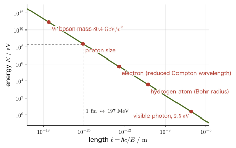
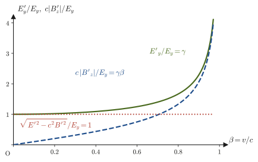
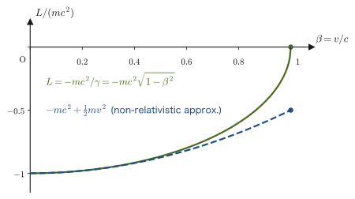

Chapter 58Natural Units and the Four-Vector Formulation of Electromagnetism — Preparing for Particle Physics
When you open a book on particle physics or relativistic quantum mechanics, you meet two “unfamiliar notations” on the very first page. The first is that neither the speed of light $c$ nor the Planck constant $\hbar$ appears anywhere in the equations. Equations such as $E^2=p^2+m^2$ are lined up as if nothing were unusual, and mass, momentum, and energy are all expressed in “$\mathrm{MeV}$” or “$\mathrm{GeV}$.” This is not a mistake; it is thanks to the convention of natural units, in which we set $c=\hbar=1$. In high school physics, too, we expressed energies in the atomic world in $\mathrm{eV}$, measured masses in $\mathrm{u}$ (the atomic mass unit), and wrote the energy of a photon as $E=h\nu$. Natural units are nothing more than that idea pushed one step further. In the first half of this chapter, we use actual numbers to practice seeing why this causes no trouble and how to get back to $\mathrm{m}$, $\mathrm{s}$, and $\mathrm{kg}$.
The second is that electromagnetism is written with indexed symbols such as $A^\mu,\ j^\mu,\ F^{\mu\nu},\ \partial_\mu F^{\mu\nu}=\mu_0 j^\nu$. In Part V (Chapters 35–42), we treated the electric field $\bm E$, the magnetic flux density $\bm B$, the electric potential $\varphi$, the vector potential $\bm A$, the charge density $\rho$, and the current density $\bm j$ as separate objects, and we lined up the four Maxwell equations. Now, however, with the Lorentz transformation of Chapter 54 and the four-vectors of Chapter 57 in hand, we can see that these can be regrouped in a natural way, so that they mix with one another in exactly the way that time and space mix. The quantities $\rho$ and $\bm j$ form a single four-vector, $\varphi$ and $\bm A$ also form a single four-vector, and $\bm E$ and $\bm B$ become the six components of a single quantity with two indices (a tensor, which we define in this chapter). The four Maxwell equations shrink to just two equations. Moreover, from this it becomes clear at a glance why a region with “only an electric field” for one observer has “both an electric field and a magnetic field” for another observer. In the second half of this chapter, we derive this step by step.
Historically, the order is the reverse. The fact that Maxwell's equations (1860s) do not keep their form under the Galilean transformation gave rise to the special theory of relativity (1905), and afterward Minkowski and others rewrote electromagnetism in four-dimensional form (Chapter 54, Section 54.2). Looking in more detail, H. A. Lorentz had obtained by 1904 the formulas for a coordinate transformation that preserves the form of Maxwell's equations (later called the “Lorentz transformation”), and H. Poincaré showed in 1905 that this transformation constitutes a symmetry of Maxwell's equations. In the same year, 1905, Einstein derived this transformation from the constancy of the speed of light and the principle of relativity alone. In other words, special relativity was born from the demands of electromagnetism, and electromagnetism is a theory that “already contained relativity within it.” Finally, we derive the relativistic Lagrangian of a free particle, $L=-mc^2/\gamma$ (connecting with Part VI), give just a brief preview of the world ahead that connects with quantum mechanics through $E^2=p^2c^2+m^2c^4$, and look back at the whole book.
- The idea of natural units $c=\hbar=1$ (and $k_{\mathrm B}=1$). How to express mass, momentum, energy, length, and time in $\mathrm{eV},\ \mathrm{MeV},\ \mathrm{GeV}$, conversions using $\hbar c=197.327\ \mathrm{MeV\,fm}$, and restoring units by dimensional analysis
- The four-gradient $\partial_\mu$ and the d'Alembertian $\Box$. The fact that the wave equation $\Box\psi=0$ keeps its form under the Lorentz transformation (resolving the fact that this was not so under the Galilean transformation)
- The four-current $j^\mu=(c\rho,\bm j)$ and the covariant form $\partial_\mu j^\mu=0$ of conservation of charge
- A review of the vector potential $\bm A$, and the passage from $\bm E=-\nabla\varphi-\partial_t\bm A,\ \bm B=\rot\bm A$ to the four-potential $A^\mu=(\varphi/c,\bm A)$. The freedom of gauge transformations
- The components of the field-strength tensor $F^{\mu\nu}=\partial^\mu A^\nu-\partial^\nu A^\mu$ (the six components of $\bm E,\bm B$), and the two invariants $\bm E\cdot\bm B$ and $E^2-c^2B^2$
- The covariant form $\partial_\mu F^{\mu\nu}=\mu_0j^\nu$ of Maxwell's equations, the homogeneous equation, and $\Box A^\mu=\mu_0j^\mu$ under the Lorenz condition $\partial_\mu A^\mu=0$
- The Lorentz transformation of the electric and magnetic fields. How, for a moving observer, the electric field “mixes” into the magnetic field and the magnetic field into the electric field (the example of a charge near a current-carrying wire)
- The covariant Lorentz force $\dd p^\mu/\dd\tau=qF^{\mu\nu}u_\nu$ and relativistic cyclotron motion
- The relativistic Lagrangian of a free particle $L=-mc^2/\gamma$, $\bm p=\gamma m\bm v$, and $H=\gamma mc^2$ (connection to Part VI)
- A preview of the road from $E^2=p^2c^2+m^2c^4$ to relativistic quantum mechanics, and a look back at the whole book (Parts I–VIII)
Related notes: Yasuhide Mochizuki, Physics Notes: Special Relativity, pp. 1–9.
58.1 Natural Units $c=\hbar=1$ — Removing Units to Make Equations Easier to Read
58.1.1 Starting from the “eV” of high school
In the atomic-physics unit of high school physics, we used the electronvolt $\mathrm{eV}$, rather than the joule $\mathrm{J}$, as the unit of energy. The kinetic energy that one electron (the magnitude of its electric charge is $e=1.602\,176\,634\times10^{-19}\ \mathrm{C}$) gains when it is accelerated through a potential difference of $1\ \mathrm{V}$ is $1\ \mathrm{eV}$; that is,
$$ 1\ \mathrm{eV}=1.602\,176\,634\times10^{-19}\ \mathrm{J} $$This follows from $W=qV$ (Section 36.1). The energy needed to pull the electron of a hydrogen atom away from the atom is $13.6\ \mathrm{eV}$, so in the world of atoms the $\mathrm{eV}$ is a unit of “just the right size.” Energies in the world of atomic nuclei are expressed in $\mathrm{MeV}$ (megaelectronvolts, $10^6\ \mathrm{eV}$), and energies in the world of elementary particles in $\mathrm{GeV}$ (gigaelectronvolts, $10^9\ \mathrm{eV}$) or $\mathrm{TeV}$ (teraelectronvolts, $10^{12}\ \mathrm{eV}$).
Next, recall $E=mc^2$ (the rest energy), which we learned in Chapter 57. A particle of mass $m$ has energy $mc^2$ even when it is at rest. Mass can therefore also be measured using $\mathrm{eV}$, in the unit “$\mathrm{eV}/c^2$.” The mass of the electron is $m_{\mathrm e}c^2=0.511\ \mathrm{MeV}$, that is, $m_{\mathrm e}=0.511\ \mathrm{MeV}/c^2$, and the mass of the proton is $m_{\mathrm p}=938.272\ \mathrm{MeV}/c^2\approx0.938\ \mathrm{GeV}/c^2$. Likewise, for momentum it is convenient to use the unit $\mathrm{eV}/c$, because of $E=pc$ (for a massless particle) and $E^2=p^2c^2+m^2c^4$ (Section 57.5). In this way, mass, momentum, and energy can all be expressed in units of $\mathrm{eV}$ multiplied by a power of $c$.
In that case, writing “$/c^2$” or “$/c$” every time is a nuisance. If we simply decide to “measure in units of the speed of light $c$” and set $c=1$, then mass, momentum, and energy can all be expressed in the same $\mathrm{eV}$, and $E^2=p^2c^2+m^2c^4$ becomes $E^2=p^2+m^2$. This is the first step in the idea of natural units.
58.1.2 Setting $c=1$ and $\hbar=1$
A unit in which the speed of light is $1$ has in fact long been used in astronomy. A “light-year” is the distance light travels in one year—a length fixed by a time. In the same way, if we decide to measure lengths by “the time light takes to travel,” length and time become the same unit. Since the speed of light in vacuum has the exact (defined) value $c=299\,792\,458\ \mathrm{m/s}$, the time light takes to travel $1\ \mathrm{m}$ is
$$ \frac{1\ \mathrm{m}}{c}=\frac{1}{299\,792\,458}\ \mathrm{s}=3.3356\ \mathrm{ns} $$To set $c=1$ means to “regard $1\ \mathrm{m}$ and $3.3356\ \mathrm{ns}$ as the same unit of length.” Already in Part VIII we have used $x^0=ct$, the time multiplied by $c$, as the “time coordinate” (Section 54.5). That was a partial implementation of the idea of setting $c=1$.
There is one more constant, the Planck constant. The energy of a photon (a particle of light) can be written $E=h\nu=\hbar\omega$ using the frequency $\nu$ and the angular frequency $\omega=2\pi\nu$ ($\hbar\equiv h/(2\pi)$ is read “h-bar” and is called the reduced Planck constant; $h=6.626\,070\,15\times10^{-34}\ \mathrm{J\,s}$ is an exact (defined) value). Setting $\hbar=1$ gives $E=\omega$; that is, “energy” and “angular frequency (the inverse of a time)” become the same unit.
Definition 58.1: Natural units
The convention of setting both the speed of light $c$ and the reduced Planck constant $\hbar$ equal to $1$ is called natural units:
$$ c=\hbar=1 $$In addition, when dealing with heat, we also set the Boltzmann constant $k_{\mathrm B}=1$ (temperature is measured in units of energy).
It is easiest to think in terms of the number of units. In SI units, mechanical quantities are expressed with three independent units: length (m), mass (kg), and time (s). Setting $c=1$ makes length and time the same unit, and the number of independent units drops to two. If we set $\hbar=1$ as well, then, since the unit of $\hbar$ is $\mathrm{J\,s}=\mathrm{kg\,m^2/s}$, mass (= energy) and time are linked, and only one independent unit remains—energy (Figure 58.1).
| Physical quantity | SI unit | Dimension in natural units | Commonly used units |
|---|---|---|---|
| Mass $m$ | $\mathrm{kg}$ | energy1 | $\mathrm{MeV},\ \mathrm{GeV}$ |
| Momentum $p$ | $\mathrm{kg\,m/s}$ | energy1 | $\mathrm{MeV},\ \mathrm{GeV}$ |
| Energy $E$ | $\mathrm{J}$ | energy1 | $\mathrm{eV},\ \mathrm{MeV},\ \mathrm{GeV}$ |
| Temperature $T$ ($k_{\mathrm B}T$) | $\mathrm{K}$ | energy1 | $\mathrm{eV},\ \mathrm{MeV}$ |
| Angular frequency $\omega$, wavenumber $k$ | $\mathrm{s^{-1}},\ \mathrm{m^{-1}}$ | energy1 | $\mathrm{MeV},\ \mathrm{fm^{-1}}$ |
| Length $\ell$ | $\mathrm{m}$ | energy−1 | $\mathrm{MeV^{-1}},\ \mathrm{GeV^{-1}}$ (converted to $\mathrm{fm}$) |
| Time $t$ | $\mathrm{s}$ | energy−1 | $\mathrm{MeV^{-1}},\ \mathrm{GeV^{-1}}$ (converted to $\mathrm{s}$) |
| Electric charge $q$ | $\mathrm{C}$ | dimensionless | $e=\sqrt{4\pi\alpha}\approx0.303$ |
| Electric field $E$, magnetic flux density $B$ | $\mathrm{V/m},\ \mathrm{T}$ | energy2 | $\mathrm{GeV}^2$ |
| Electric potential $\varphi$, vector potential $A$ | $\mathrm{V},\ \mathrm{T\,m}$ | energy1 | $\mathrm{MeV},\ \mathrm{GeV}$ |
| Energy density of the electromagnetic field $\frac12(E^2+B^2)$ | $\mathrm{J/m^3}$ | energy4 | $\mathrm{GeV}^4$ |
| Speed $v$, action $S$ | $\mathrm{m/s},\ \mathrm{J\,s}$ | dimensionless | $\beta=v/c$, etc. |
Intuition: Removing the units does not remove the “physics”
Natural units do not change the laws of physics by saying “because $c=1$, light travels at speed $1$.” We have merely tied the “ruler that measures length” and the “clock that measures time” together by the speed of light and made them one. Just as $E=mc^2$, which we learned in Chapter 57, showed that mass and energy are different names for the same thing (mass–energy equivalence), $c=1$ can be said to put the lesson of the Lorentz transformation, that “space and time are different names for the same thing,” into the form of a convention about units. Similarly, the relation $E=\hbar\omega$ of quantum mechanics says that “energy is proportional to frequency,” so by setting $\hbar=1$ we can give energy and frequency the same unit.
Discussion: Before and after using natural units
It may feel strange at first to “remove the units.” So let us set expressions with the same content side by side, before using natural units (the SI form, with $c,\hbar$ kept) and after. In every expression the constants $c,\hbar$ disappear, and the relative sizes of the physical quantities can be read off directly.
| Content | Before ($c,\hbar$ present) | After ($c=\hbar=1$) |
|---|---|---|
| Relation among energy, momentum, and mass | $E^2=p^2c^2+m^2c^4$ | $E^2=p^2+m^2$ |
| Reduced Compton wavelength of the electron (a length) | $\hbar/(m_{\mathrm e}c)$ | $1/m_{\mathrm e}$ |
| Energy levels of the hydrogen atom (fine-structure constant $\alpha$) | $E_n=-\dfrac{\alpha^2m_{\mathrm e}c^2}{2n^2}$ | $E_n=-\dfrac{\alpha^2m_{\mathrm e}}{2n^2}$ |
| Equation of a wave with mass (Klein–Gordon equation, Section 58.10) | $\left(\Box+\dfrac{m^2c^2}{\hbar^2}\right)\psi=0$ | $(\Box+m^2)\psi=0$ |
(The formula for the levels of the hydrogen atom is a result known from the quantum theory of atoms, and it is not derived in this book.) For example, in the hydrogen-atom formula in the right column, setting $n=1$ gives $E_1=-\alpha^2m_{\mathrm e}/2=-(1/137.036)^2\times0.511\times10^{6}\ \mathrm{eV}/2=-13.6\ \mathrm{eV}$, the value we learned in high school. At the same time, the comparison in size, that “the binding energy of the hydrogen atom is only $\alpha^2/2\approx2.7\times10^{-5}$ times the rest energy of the electron,” can be seen at a glance from the form of the expression. In the SI formula, hidden behind the numerical values of $c$ and $\hbar$, it is hard to gain this kind of insight.
58.1.3 Conversion using $\hbar c=197.327\ \mathrm{MeV\,fm}$
We want to convert the results calculated in natural units back to $\mathrm{m}$, $\mathrm{s}$, and $\mathrm{kg}$ in the end and compare them with experiment. The bridge for that is the product $\hbar c$ of $\hbar$ and $c$. Since $\hbar=h/(2\pi)=1.054\,571\,817\times10^{-34}\ \mathrm{J\,s}$ and $c=299\,792\,458\ \mathrm{m/s}$, we have
\begin{equation} \hbar c=3.161\,527\times10^{-26}\ \mathrm{J\,m}=\frac{3.161\,527\times10^{-26}}{1.602\,177\times10^{-19}}\ \mathrm{eV\,m}=1.973\,270\times10^{-7}\ \mathrm{eV\,m} \label{eq:58-hbarc-eVm} \end{equation}The unit of length in the world of atomic nuclei is $1\ \mathrm{fm}=10^{-15}\ \mathrm{m}$ (femtometer; also called the “fermi”; the radius of the proton is about $0.84\ \mathrm{fm}$), and the unit of energy is $\mathrm{MeV}$, so rewriting Eq. \eqref{eq:58-hbarc-eVm} gives
($1.973\,270\times10^{-7}\ \mathrm{eV\,m}=1.973\,270\times10^{-7}\times10^{-6}\ \mathrm{MeV}\times10^{15}\ \mathrm{fm}=197.327\ \mathrm{MeV\,fm}$.) In natural units $\hbar c=1$, so Eq. \eqref{eq:58-hbarc} says “$1=197.327\ \mathrm{MeV\,fm}$”; that is, it gives the conversion table
$$ 1\ \mathrm{fm}^{-1}\ \Longleftrightarrow\ 197.327\ \mathrm{MeV},\qquad 1\ \mathrm{MeV}^{-1}\ \Longleftrightarrow\ 197.327\ \mathrm{fm} $$A length $\ell$ and an energy $E$ are related by $E=\hbar c/\ell$. The shorter the length, the larger the corresponding energy—this is one of the reasons why it is said in elementary particle physics that “we probe the small world with high energy” (Figure 58.2). The correspondence between length and energy here arises naturally from the uncertainty principle of quantum mechanics: when a particle is confined to a region of size about $\ell$, the magnitude of its momentum is about $\hbar/\ell$ (quantum mechanics is not treated in this book).

Note how the points of Figure 58.2 are to be read. (i) The visible-light point corresponds to a photon of energy $2.5\ \mathrm{eV}$ (wavelength $\lambda=2\pi\hbar c/E\approx500\ \mathrm{nm}$), for which $\ell=\hbar c/E\approx79\ \mathrm{nm}$; this is $1/(2\pi)$ of the wavelength (this corresponds to our having written $E=2\pi\hbar c/\lambda$ in Example 58.2(c)). (ii) The hydrogen-atom point lies at $\hbar c/a_0=\alpha m_{\mathrm e}c^2\approx3.7\ \mathrm{keV}$, for the Bohr radius $a_0=\hbar/(\alpha m_{\mathrm e}c)$. This is a different quantity from the ionization energy of the hydrogen atom, $13.6\ \mathrm{eV}=\alpha^2m_{\mathrm e}c^2/2$, and is $2/\alpha\approx274$ times as large. The “typical energy of a particle confined in a region of size $\ell$” and the “binding energy within that region” are not the same.
| Natural units | Value in SI | How to obtain it |
|---|---|---|
| $1\ \mathrm{GeV}$ (energy) | $1.602\,177\times10^{-10}\ \mathrm{J}$ | $10^9\times e\ [\mathrm{C}]\times1\ \mathrm{V}$ |
| $1\ \mathrm{GeV}$ (mass) | $1.782\,662\times10^{-27}\ \mathrm{kg}$ | $1\ \mathrm{GeV}/c^2$ |
| $1\ \mathrm{GeV}$ (momentum) | $5.344\,286\times10^{-19}\ \mathrm{kg\,m/s}$ | $1\ \mathrm{GeV}/c$ |
| $1\ \mathrm{GeV}^{-1}$ (length) | $0.197\,327\ \mathrm{fm}=1.973\,27\times10^{-16}\ \mathrm{m}$ | $\hbar c/(1\ \mathrm{GeV})$ |
| $1\ \mathrm{GeV}^{-1}$ (time) | $6.582\,120\times10^{-25}\ \mathrm{s}$ | $\hbar/(1\ \mathrm{GeV})$ |
| $1\ \mathrm{eV}$ (temperature) | $1.160\,452\times10^{4}\ \mathrm{K}$ | $1\ \mathrm{eV}/k_{\mathrm B}$ |
| $1\ \mathrm{GeV}^{-2}$ (cross section) | $3.894\times10^{-32}\ \mathrm{m^2}=0.3894\ \mathrm{mb}$ | $(\hbar c)^2/(1\ \mathrm{GeV})^2$ ($1\ \mathrm{mb}=10^{-31}\ \mathrm{m^2}$) |
Example 58.1: Expressing the mass of the proton in kg
In tables of elementary particle physics, the mass of the proton is written as $m_{\mathrm p}=938.272\ \mathrm{MeV}$. Express this in $\mathrm{kg}$. Use $1\ \mathrm{eV}=1.602\,177\times10^{-19}\ \mathrm{J}$ and $c=2.997\,925\times10^{8}\ \mathrm{m/s}$.
Solution. The “$938.272\ \mathrm{MeV}$” of natural units means, once $c$ is restored, that the mass is $m_{\mathrm p}=938.272\ \mathrm{MeV}/c^2$ (that is, the rest energy is $m_{\mathrm p}c^2=938.272\ \mathrm{MeV}$). First, converting to $\mathrm{J}$ gives
$$ m_{\mathrm p}c^2=938.272\times10^6\times1.602\,177\times10^{-19}\ \mathrm{J}=1.503\,278\times10^{-10}\ \mathrm{J} $$Dividing this by $c^2=(2.997\,925\times10^{8}\ \mathrm{m/s})^2=8.987\,552\times10^{16}\ \mathrm{m^2/s^2}$, we obtain
$$ m_{\mathrm p}=\frac{1.503\,278\times10^{-10}\ \mathrm{J}}{8.987\,552\times10^{16}\ \mathrm{m^2/s^2}}=1.672\,62\times10^{-27}\ \mathrm{kg} $$(since $\mathrm{J}=\mathrm{kg\,m^2/s^2}$, the unit comes out as $\mathrm{kg}$). This agrees with the mass of the proton, $1.672\,622\times10^{-27}\ \mathrm{kg}$. Also, if we remember one conversion factor, $1\ \mathrm{MeV}/c^2=1.782\,662\times10^{-30}\ \mathrm{kg}$, we immediately get $938.272\times1.782\,662\times10^{-30}=1.67262\times10^{-27}\ \mathrm{kg}$.
Example 58.2: Converting between length and energy
(a) Find the energy corresponding to $1\ \mathrm{fm}$. (b) Find, in $\mathrm{fm}$, the length $\hbar/(m_{\mathrm e}c)$ (the reduced Compton wavelength of the electron) corresponding to the inverse of the electron mass $m_{\mathrm e}=0.511\ \mathrm{MeV}$. (c) Find the energy of a photon of visible light with wavelength $500\ \mathrm{nm}$, using $\hbar c=197.327\ \mathrm{MeV\,fm}$.
Solution. (a) Substituting $\ell=1\ \mathrm{fm}$ into $E=\hbar c/\ell$ gives $E=197.327\ \mathrm{MeV\,fm}/(1\ \mathrm{fm})=197.327\ \mathrm{MeV}$.
(b) In natural units, the length corresponding to the mass $m_{\mathrm e}$ is $1/m_{\mathrm e}$. Restoring $c$ and $\hbar$, we have $\hbar/(m_{\mathrm e}c)=\hbar c/(m_{\mathrm e}c^2)$, so
$$ \frac{\hbar c}{m_{\mathrm e}c^2}=\frac{197.327\ \mathrm{MeV\,fm}}{0.511\ \mathrm{MeV}}=386\ \mathrm{fm}=3.86\times10^{-13}\ \mathrm{m} $$($197.327/0.511=386.2$). This is much smaller than an atom ($\sim10^{-10}\ \mathrm{m}$) but larger than the radius of a proton ($\sim1\ \mathrm{fm}$).
(c) Using the wavelength $\lambda$ of the photon and the angular wavenumber $k=2\pi/\lambda$, the photon energy is $E=\hbar\omega=\hbar ck=2\pi\hbar c/\lambda$. Substituting $\lambda=500\ \mathrm{nm}=5.00\times10^{8}\ \mathrm{fm}$ ($1\ \mathrm{nm}=10^{-9}\ \mathrm{m}=10^6\ \mathrm{fm}$), we obtain
$$ E=\frac{2\pi\times197.327\ \mathrm{MeV\,fm}}{5.00\times10^{8}\ \mathrm{fm}}=2.48\times10^{-6}\ \mathrm{MeV}=2.48\ \mathrm{eV} $$This agrees with what you learned in high school physics, that the photon energy of visible light is a few $\mathrm{eV}$ (from $2\pi\times197.327=1239.84$ we obtain $hc=1239.84\ \mathrm{eV\,nm}$). Note that the visible-light point in Figure 58.2 corresponds to the reduced wavelength of this photon, $\lambda/(2\pi)=79\ \mathrm{nm}$.
58.1.4 Restoring the units — recovery by dimensional analysis
Let us review the procedure for restoring $c$ and $\hbar$ in an equation written in natural units. The principle is simple; it is only the requirement that “every term in a physical equation has the same dimension” (the dimensional analysis of Section 1.3). In SI units, $[\hbar]=\mathrm{kg\,m^2/s}$ and $[c]=\mathrm{m/s}$, so once a mass $m$ is given, the following quantities can be formed from these (using $\mathrm{J}=\mathrm{kg\,m^2/s^2}$):
$$ \underbrace{mc^2}_{\text{energy}\ [\mathrm{J}]},\qquad \underbrace{mc}_{\text{momentum}\ [\mathrm{kg\,m/s}]},\qquad \underbrace{\frac{\hbar}{mc}}_{\text{length}\ [\mathrm{m}]},\qquad \underbrace{\frac{\hbar}{mc^2}}_{\text{time}\ [\mathrm{s}]} $$(Length: $\dfrac{\mathrm{kg\,m^2/s}}{\mathrm{kg}\cdot\mathrm{m/s}}=\mathrm{m}$; time: $\dfrac{\mathrm{kg\,m^2/s}}{\mathrm{kg\,m^2/s^2}}=\mathrm{s}$.)
Formula 58.1: Procedure for restoring units
Suppose that a quantity $X$ obtained in natural units has the dimension of (energy)$n$ (Table 58.1). To restore it to a quantity with SI units $\mathrm{kg}^a\,\mathrm{m}^b\,\mathrm{s}^c$, take the following three steps.
- Convert the value of $X$ into a quantity $X\ [\mathrm J^n]$ whose unit is the joule ($\mathrm J=\mathrm{kg\,m^2\,s^{-2}}$) (with $1\ \mathrm{eV}=1.602\,177\times10^{-19}\ \mathrm J$).
- Consider the quantity $X_{\mathrm{SI}}=X\,\hbar^xc^y$ obtained by multiplying by $\hbar^xc^y$. Since $\hbar=\mathrm{kg\,m^2\,s^{-1}}$ and $c=\mathrm{m\,s^{-1}}$, its unit is $\mathrm J^n\hbar^xc^y=\mathrm{kg}^{\,n+x}\,\mathrm{m}^{\,2n+2x+y}\,\mathrm{s}^{\,-2n-x-y}$.
- Solve the simultaneous equations that make this agree with the target $\mathrm{kg}^a\,\mathrm{m}^b\,\mathrm{s}^c$, $$n+x=a,\qquad2n+2x+y=b,\qquad-2n-x-y=c$$ to determine $x,y$. There are two unknowns and three equations, so the one left over serves as a check on whether $n$ was estimated correctly.
The commonly used results are as follows (the powers come out of the three equations). Mass ($n=1$, target $\mathrm{kg}$): $x=0,\ y=-2$, giving $m/c^2$. Momentum ($n=1$, target $\mathrm{kg\,m/s}$): $x=0,\ y=-1$, giving $p/c$. Length ($n=-1$, target $\mathrm m$): $x=1,\ y=1$, giving $\hbar c\,\ell$. Time ($n=-1$, target $\mathrm s$): $x=1,\ y=0$, giving $\hbar\,t$. Cross section ($n=-2$, target $\mathrm{m^2}$): $x=2,\ y=2$, giving $(\hbar c)^2\sigma$.
When you restore by replacing the symbols in an equation, take the opposite view: the $m$ in a natural-unit equation “was really $mc^2$” (restored as an energy), $p$ “was really $pc$”, the length $\ell$ “was really $\ell/(\hbar c)$”, and the time $t$ “was really $t/\hbar$”. When you express the value of a mass in $\mathrm{kg}$, take $m/c^2$; when you express it as an energy, take $mc^2$; do not confuse the two.
Example 58.3: Computing $E^2=p^2+m^2$ and restoring the units
In natural units (unit: $\mathrm{MeV}$), an electron ($m=0.511$) has momentum $p=2$. Find its energy $E$. Then write down the equation with $c$ restored, $E^2=p^2c^2+m^2c^4$, express $E$ and $p$ in SI units, and find the speed $v/c$.
Solution. Substituting into $E^2=p^2+m^2$,
$$ E=\sqrt{p^2+m^2}=\sqrt{2^2+0.511^2}\ \mathrm{MeV}=\sqrt{4+0.2611}\ \mathrm{MeV}=2.064\ \mathrm{MeV} $$Now restore the units: replacing $p\to pc$ and $m\to mc^2$ gives $E^2=(pc)^2+(mc^2)^2$, and every term now has the same dimension, energy2. We see that what was meant was $p=2\ \mathrm{MeV}/c$ and $m=0.511\ \mathrm{MeV}/c^2$. In SI units,
$$ p=\frac{2\times10^{6}\times1.602\,177\times10^{-19}\ \mathrm{J}}{2.997\,925\times10^{8}\ \mathrm{m/s}}=1.069\times10^{-21}\ \mathrm{kg\,m/s},\qquad E=2.064\times10^{6}\times1.602\,177\times10^{-19}\ \mathrm{J}=3.307\times10^{-13}\ \mathrm{J} $$For the speed, the relation of Chapter 57, $\bm p=E\bm v/c^2$ ($v=pc^2/E$), gives $v/c=pc/E=2/2.064=0.969$. The Lorentz factor is $\gamma=E/(mc^2)=2.064/0.511=4.04$. (In natural units one can compute with $c$ eliminated, as $v=p/E$ and $\gamma=E/m$.)
Example 58.4: Restoring units with simultaneous equations for the powers
Restore the following natural-unit quantities to SI units by the procedure of Formula 58.1. (a) The scattering cross section $\sigma=1\ \mathrm{GeV}^{-2}$, in $\mathrm{m^2}$. (b) The lifetime $\tau=1/\Gamma$ of a particle with decay width $\Gamma=2.0\ \mathrm{GeV}$, in $\mathrm s$. (c) The electron mass $m_{\mathrm e}=0.511\ \mathrm{MeV}$, in $\mathrm{kg}$.
Solution. (a) Here $\sigma$ has $n=-2$ and the target is $\mathrm{m^2}$, that is, $(a,b,c)=(0,2,0)$. The simultaneous equations are
$$ -2+x=0,\qquad-4+2x+y=2,\qquad4-x-y=0 $$From the first equation $x=2$, from the second $y=2+4-2x=2$, and substituting into the third gives $4-2-2=0$, which holds (the dimensional check). Hence $\sigma_{\mathrm{SI}}=\sigma\,(\hbar c)^2$, and using $1\ \mathrm{GeV}=1.602\,177\times10^{-10}\ \mathrm J$ and $\hbar c=3.161\,527\times10^{-26}\ \mathrm{J\,m}$, we get
$$ \sigma_{\mathrm{SI}}=\left(\frac{3.161\,527\times10^{-26}\ \mathrm{J\,m}}{1.602\,177\times10^{-10}\ \mathrm J}\right)^2=(1.973\,27\times10^{-16}\ \mathrm m)^2=3.894\times10^{-32}\ \mathrm{m^2} $$(this agrees with the value in Table 58.2).
(b) Here $\tau=1/\Gamma$ has $n=-1$ and the target is $\mathrm s$, that is, $(a,b,c)=(0,0,1)$. The simultaneous equations are $-1+x=0,\ -2+2x+y=0,\ 2-x-y=1$, which give $x=1$ and $y=0$, and the third equation reads $2-1-0=1$, which holds. Hence $\tau=\hbar/\Gamma$, and
$$ \tau=\frac{1.054\,572\times10^{-34}\ \mathrm{J\,s}}{2.0\times1.602\,177\times10^{-10}\ \mathrm J}=3.29\times10^{-25}\ \mathrm s $$(c) The mass has $n=1$ and the target is $\mathrm{kg}$, that is, $(a,b,c)=(1,0,0)$. From $1+x=1$ we get $x=0$, from $2+0+y=0$ we get $y=-2$, and the third equation reads $-2-0+2=0$, which holds. Hence the result is $m_{\mathrm e}/c^2$, and
$$ m_{\mathrm e}=\frac{0.511\times10^{6}\times1.602\,177\times10^{-19}\ \mathrm J}{(2.997\,925\times10^{8}\ \mathrm{m/s})^2}=9.109\times10^{-31}\ \mathrm{kg} $$which agrees with the electron mass $9.109\times10^{-31}\ \mathrm{kg}$.
58.1.5 $k_{\mathrm B}=1$ and notes on the units of electromagnetism
If we also set the Boltzmann constant $k_{\mathrm B}=1.380\,649\times10^{-23}\ \mathrm{J/K}$, which appears in thermodynamics and statistical mechanics (Part IV and Part VII), equal to 1, the temperature $T$ can be measured in units of energy. Since $k_{\mathrm B}=8.617\,333\times10^{-5}\ \mathrm{eV/K}$, $1\ \mathrm{eV}$ converted to a temperature corresponds to $1.160\,452\times10^{4}\ \mathrm{K}$.
Let us also prepare for one more topic: the treatment of the “lifetime” of short-lived particles. For a particle that exists for only a very short time, the shorter the lifetime $\tau$, the more the value of the particle's energy (mass) is blurred, by about $\Gamma\sim\hbar/\tau$ (this is the uncertainty principle of quantum mechanics; it is not derived in this book). The width $\Gamma$ of this blurring is called the decay width, and the larger $\Gamma$ is, the faster the particle decays. The mean lifetime is $\tau=\hbar/\Gamma$, which in natural units can be written $\tau=1/\Gamma$.
Example 58.5: Converting temperature and lifetime
(a) At room temperature $T=300\ \mathrm{K}$, how many $\mathrm{eV}$ is $k_{\mathrm B}T$? Also, what temperature in $\mathrm{K}$ corresponds to a thermal energy of $1\ \mathrm{MeV}$? (b) An unstable particle that exists for only a very short time has decay width $\Gamma=150\ \mathrm{MeV}$. Find its mean lifetime $\tau=\hbar/\Gamma$. Also express, in $\mathrm{fm}$, the distance $c\tau$ that light travels in that time. Use $\hbar=6.582\,120\times10^{-22}\ \mathrm{MeV\,s}$.
Solution. (a) $k_{\mathrm B}T=8.617\,333\times10^{-5}\ \mathrm{eV/K}\times300\ \mathrm{K}=2.585\times10^{-2}\ \mathrm{eV}=25.9\ \mathrm{meV}$. Conversely, for $1\ \mathrm{MeV}=10^6\ \mathrm{eV}$, $T=10^6/(8.617\,333\times10^{-5})\ \mathrm{K}=1.160\,5\times10^{10}\ \mathrm{K}$ (about $116$ hundred million kelvin, that is, 11.6 billion kelvin).
(b) $\tau=\hbar/\Gamma$ is the natural-unit “$\tau=1/\Gamma$” with $\hbar$ restored (time $=\hbar\times$ energy−1).
$$ \tau=\frac{6.582\,120\times10^{-22}\ \mathrm{MeV\,s}}{150\ \mathrm{MeV}}=4.39\times10^{-24}\ \mathrm{s} $$The distance light travels is $c\tau=2.998\times10^{8}\times4.388\times10^{-24}\ \mathrm{m}=1.32\times10^{-15}\ \mathrm{m}=1.32\ \mathrm{fm}$, which agrees with $\hbar c/\Gamma=197.327/150\ \mathrm{fm}=1.32\ \mathrm{fm}$. Even though a lifetime of about $10^{-24}\ \mathrm{s}$ is so short, it is the time scale of the nuclear world: in that time, something traveling at the speed of light covers only a distance about the size of a proton.
Caution: There are three systems of units for electromagnetism
When electromagnetism is written in natural units, one more level of convention is needed for the unit of charge. Since $c=1/\sqrt{\varepsilon_0\mu_0}$, setting $c=1$ gives $\varepsilon_0\mu_0=1$, and if one of the two is set to $1$, the other is determined as well. (i) In the Heaviside–Lorentz units, in which $\varepsilon_0=1$ (and hence $\mu_0=1$), Coulomb's law becomes $F=q_1q_2/(4\pi r^2)$, and the fine-structure constant can be written $\alpha=e^2/(4\pi)\approx1/137.036$ (that is, $e=\sqrt{4\pi\alpha}=0.3028$). Many textbooks of particle physics use this system. In this system, the charge $e$ is dimensionless, and the electric field $E$ and the magnetic flux density $B$ have the dimension of (energy)2 (Table 58.1). The energy density of the electromagnetic field, $\frac12(E^2+B^2)$, has the dimension (energy)4, which agrees with “energy/volume $=$ energy $\times$ energy3”. (ii) In the Gaussian units, in which $4\pi\varepsilon_0=1$, we have $\alpha=e^2$. (iii) One can also keep SI units, as in this book. The fine-structure constant $\alpha=e^2/(4\pi\varepsilon_0\hbar c)$ is a dimensionless number and takes the same value $1/137.036$ in every system of units, so when you are unsure about the differences between systems of units, you can check with the value of $\alpha$. In Sections 58.2–58.9 of this chapter, we write everything in SI units without omitting $c,\varepsilon_0,\mu_0$, so that the correspondence with Part V is easy to see.
58.2 The Four-Gradient $\partial_\mu$ and the d'Alembertian $\Box$ — Lorentz Invariance of the Wave Equation
In the previous section we sorted out units. From here on, we rewrite the electromagnetism of Part V in a form whose shape does not change under Lorentz transformations (the covariant form). The equations of electromagnetism contain many partial derivatives $\partial/\partial t$, $\partial/\partial x$, …. So we first examine how these partial derivatives transform when the coordinates are changed by a Lorentz transformation.
Review of Chapter 57: Index conventions and four-vectors
The details are in Sections 57.1–57.3, but we collect here the conventions used in this chapter.
- The four-position is $x^\mu=(x^0,x^1,x^2,x^3)=(ct,\ x,\ y,\ z)$. Greek indices $\mu,\nu,\dots$ run over $0,1,2,3$, and Latin indices $i,j,k$ run over the spatial components $1,2,3$ only. A superscript number is not a power but the label of a component.
- The metric is $g_{\mu\nu}=g^{\mu\nu}=\mathrm{diag}(1,-1,-1,-1)$. Indices are raised and lowered by $a_\mu=g_{\mu\nu}a^\nu$; that is, $a_0=a^0,\ a_i=-a^i$ (the lowered spatial components have the opposite sign).
- Einstein summation convention: when the same index appears once as an upper index and once as a lower index, we sum over that index from $0$ to $3$. For example, the inner product (dot product) is $a\cdot b=a_\mu b^\mu=a^0b^0-\bm a\cdot\bm b$ (with $\bm a=(a^1,a^2,a^3)$). The inner product $a\cdot b$ does not change under a Lorentz transformation (it is Lorentz invariant, also called a Lorentz scalar).
- An index that appears once as a superscript and once as a subscript with the same letter (a dummy index) is summed over and disappears. In contrast, an index that remains once in the same position on both sides of an equation (a free index) indicates that there is one equation for each value of that index. For example, $\partial_\mu F^{\mu\nu}=\mu_0j^\nu$ is summed over $\mu$ and represents four equations, for $\nu=0,1,2,3$.
- The transformation from S to S′ (moving in the $x$ direction with speed $v=\beta c$) is $a'^\mu=\Lambda^\mu{}_\nu a^\nu$. Explicitly, $a'^0=\gamma(a^0-\beta a^1)$, $a'^1=\gamma(a^1-\beta a^0)$, $a'^2=a^2$, $a'^3=a^3$ (this corresponds to the matrix $\Lambda(\beta)$ of Section 54.7). The inverse transformation is obtained by $\beta\to-\beta$: $a^0=\gamma(a'^0+\beta a'^1)$, $a^1=\gamma(a'^1+\beta a'^0)$.
58.2.1 The four-gradient $\partial_\mu$
We arrange the partial derivatives of a scalar field $\psi(t,x,y,z)$ (a field whose value at each point is determined by a single number, such as temperature or electric potential) as partial derivatives with respect to the four coordinates $x^\mu=(ct,x,y,z)$.
Definition 58.2: Four-gradient
We write the partial derivative with respect to the coordinate $x^\mu$ as $\partial_\mu\equiv\dfrac{\partial}{\partial x^\mu}$ ($\partial$ is read “partial” or “del”), and call the ordered set having these as its components the four-gradient:
\begin{equation} \partial_\mu=\left(\pdiff{}{x^0},\ \pdiff{}{x^1},\ \pdiff{}{x^2},\ \pdiff{}{x^3}\right)=\left(\frac1c\pdiff{}{t},\ \pdiff{}{x},\ \pdiff{}{y},\ \pdiff{}{z}\right)=\left(\frac1c\pdiff{}{t},\ \nabla\right) \label{eq:58-partial-lower} \end{equation}With the index raised, $\partial^\mu=g^{\mu\nu}\partial_\nu$ has components in which the signs of the spatial components change: $\partial^\mu=\left(\dfrac1c\pdiff{}{t},\ -\nabla\right)$.
Since $x^0=ct$, we have $\dfrac{\partial}{\partial x^0}=\dfrac1c\dfrac{\partial}{\partial t}$. The $\nabla=(\partial_x,\partial_y,\partial_z)$ (nabla, or del) used in Part V is itself the spatial part of the four-gradient, and the four-gradient may be thought of as “the gradient including the time derivative” (University Mathematics, Section 18.4). Below we abbreviate $\partial_t=\partial/\partial t$.
Now, how does $\partial_\mu$ change under a Lorentz transformation? We find the partial derivative $\partial'_\mu=\partial/\partial x'^\mu$ written in the coordinates $x'^\mu$ of S′ by partial differentiation of a composite function (the chain rule; University Mathematics, Section 6.4). Regarding $\psi$ as a function of the coordinates $x^\nu$ of S, and noting that $x^\nu$ is a function of $x'^\mu$, we obtain
$$ \pdiff{\psi}{x'^\mu}=\sum_{\nu=0}^{3}\pdiff{x^\nu}{x'^\mu}\pdiff{\psi}{x^\nu} \qquad\text{that is}\qquad \partial'_\mu=\pdiff{x^\nu}{x'^\mu}\,\partial_\nu\quad(\text{summation convention}) $$For a transformation in the $x$ direction, from the inverse transformation $x^0=\gamma(x'^0+\beta x'^1)$, $x^1=\gamma(x'^1+\beta x'^0)$, $x^2=x'^2$, $x^3=x'^3$ we get $\partial x^0/\partial x'^0=\gamma$, $\partial x^1/\partial x'^0=\gamma\beta$, $\partial x^0/\partial x'^1=\gamma\beta$, $\partial x^1/\partial x'^1=\gamma$, so
\begin{equation} \partial'_0=\gamma\,(\partial_0+\beta\,\partial_1),\qquad \partial'_1=\gamma\,(\beta\,\partial_0+\partial_1),\qquad \partial'_2=\partial_2,\qquad \partial'_3=\partial_3 \label{eq:58-partial-boost} \end{equation}Let us compare this with $a'^0=\gamma(a^0-\beta a^1)$, $a'^1=\gamma(a^1-\beta a^0)$. Since the lowered components are $a_0=a^0,\ a_1=-a^1$, we get $a'_0=\gamma(a_0+\beta a_1)$, $a'_1=\gamma(a_1+\beta a_0)$, which has the same form as Eq. \eqref{eq:58-partial-boost}. That is, $\partial_\mu$ transforms as a four-vector with a lower index. In general we can state the following ($(\Lambda^{-1})^\nu{}_\mu$ is an entry of the inverse matrix of $\Lambda$).
Theorem 58.1: Transformation of the four-gradient and the four-divergence
Under a Lorentz transformation $x'^\mu=\Lambda^\mu{}_\nu x^\nu$, the four-gradient transforms as $\partial'_\mu=(\Lambda^{-1})^\nu{}_\mu\,\partial_\nu$. Therefore, when $a^\mu$ is a four-vector, its four-divergence $\partial_\mu a^\mu=\partial_0a^0+\partial_1a^1+\partial_2a^2+\partial_3a^3$ is Lorentz invariant: $\partial'_\mu a'^\mu=\partial_\mu a^\mu$.
Proof
Since the transformation is linear ($x^\nu=(\Lambda^{-1})^\nu{}_\mu x'^\mu$), the coefficient is $\partial x^\nu/\partial x'^\mu=(\Lambda^{-1})^\nu{}_\mu$, and the chain rule gives $\partial'_\mu=(\Lambda^{-1})^\nu{}_\mu\partial_\nu$. Then,
$$ \partial'_\mu a'^\mu=(\Lambda^{-1})^\nu{}_\mu\,\partial_\nu\,\bigl(\Lambda^\mu{}_\rho a^\rho\bigr)=\bigl[(\Lambda^{-1})^\nu{}_\mu\Lambda^\mu{}_\rho\bigr]\partial_\nu a^\rho=\delta^\nu{}_\rho\,\partial_\nu a^\rho=\partial_\nu a^\nu $$($\Lambda$ is a constant, so it can be taken outside the derivative. From $\Lambda^{-1}\Lambda=1$ we have $(\Lambda^{-1})^\nu{}_\mu\Lambda^\mu{}_\rho=\delta^\nu{}_\rho$, the Kronecker delta.) Checking in components, from Eq. \eqref{eq:58-partial-boost} and $a'^0=\gamma(a^0-\beta a^1)$, $a'^1=\gamma(a^1-\beta a^0)$ we obtain
$$ \begin{aligned} \partial'_0a'^0+\partial'_1a'^1 &=\gamma^2\bigl[(\partial_0+\beta\partial_1)(a^0-\beta a^1)+(\beta\partial_0+\partial_1)(a^1-\beta a^0)\bigr]\\ &=\gamma^2\bigl[(1-\beta^2)\,\partial_0a^0+(1-\beta^2)\,\partial_1a^1+(-\beta+\beta)\,\partial_0a^1+(\beta-\beta)\,\partial_1a^0\bigr]\\ &=\gamma^2(1-\beta^2)\,(\partial_0a^0+\partial_1a^1)=\partial_0a^0+\partial_1a^1 \end{aligned} $$($\gamma^2(1-\beta^2)=1$. The $y,z$ components do not change.)
∎
Example 58.6: Transformation of the four-gradient
At a certain point in frame S, the partial derivatives of a scalar field $\psi$ were $\partial_0\psi=5\ \mathrm{m^{-1}}$, $\partial_1\psi=3\ \mathrm{m^{-1}}$, $\partial_2\psi=\partial_3\psi=0$. Find $\partial'_0\psi,\ \partial'_1\psi$ in frame S′, which moves in the $x$ direction with $\beta=0.6$, and verify that $(\partial_0\psi)^2-(\partial_1\psi)^2$ does not change.
Solution. From $\beta=0.6$ we get $\gamma=1/\sqrt{1-0.36}=1.25$. Substituting into Eq. \eqref{eq:58-partial-boost},
$$ \partial'_0\psi=1.25\,(5+0.6\times3)=1.25\times6.8=8.5\ \mathrm{m^{-1}},\qquad \partial'_1\psi=1.25\,(0.6\times5+3)=1.25\times6=7.5\ \mathrm{m^{-1}} $$In frame S, $(\partial_0\psi)^2-(\partial_1\psi)^2=25-9=16$, and in frame S′, $(\partial'_0\psi)^2-(\partial'_1\psi)^2=72.25-56.25=16$ (in units of $\mathrm{m^{-2}}$), so the two agree. This is one example of the fact that the inner product of the four-gradient with itself, $\partial_\mu\psi\,\partial^\mu\psi=(\partial_0\psi)^2-(\partial_1\psi)^2-(\partial_2\psi)^2-(\partial_3\psi)^2$, is Lorentz invariant.
58.2.2 The d'Alembertian $\Box$
Let us write the combination “second time derivative $-$ second space derivative” that appears in the equation of a wave in terms of the four-gradient. Forming the contraction (inner product) of $\partial_\mu$ and $\partial^\mu$, we obtain
\begin{equation} \partial_\mu\partial^\mu=\partial_0\partial^0+\partial_1\partial^1+\partial_2\partial^2+\partial_3\partial^3=\frac1{c^2}\pdiff{^2}{t^2}-\pdiff{^2}{x^2}-\pdiff{^2}{y^2}-\pdiff{^2}{z^2}=\frac1{c^2}\pdiff{^2}{t^2}-\nabla^2 \label{eq:58-box} \end{equation}(since $\partial^i=-\partial_i$, the spatial components carry a $-$ sign. $\nabla^2=\nabla\cdot\nabla$ is the Laplacian; University Mathematics, Section 19.3).
Definition 58.3: d'Alembertian
The operator in Eq. \eqref{eq:58-box} is called the d'Alembertian and is written $\Box$:
$$ \Box\equiv\partial_\mu\partial^\mu=\frac1{c^2}\pdiff{^2}{t^2}-\nabla^2 $$(Some textbooks define it with the opposite sign, $\Box=\nabla^2-\dfrac1{c^2}\partial_t^2$, so check this when reading other books. This book uses the sign above, to match the metric $(+,-,-,-)$.)
The d'Alembertian is the “spacetime version” of the Laplacian $\nabla^2$. Just as the Laplacian does not change its form under rotations of space (transformations that rotate the coordinate axes), the d'Alembertian does not change its form under Lorentz transformations.
Theorem 58.2: Lorentz invariance of the d'Alembertian
Even if the coordinates are replaced as $x^\mu\to x'^\mu$ by a Lorentz transformation, we have $\Box'=\partial'_\mu\partial'^\mu=\partial_\mu\partial^\mu=\Box$.
Proof
Using Eq. \eqref{eq:58-partial-boost}, we compute $\Box'=(\partial'_0)^2-(\partial'_1)^2-(\partial'_2)^2-(\partial'_3)^2$.
$$ \begin{aligned} (\partial'_0)^2-(\partial'_1)^2&=\gamma^2\bigl[(\partial_0+\beta\partial_1)^2-(\beta\partial_0+\partial_1)^2\bigr]\\ &=\gamma^2\bigl[\partial_0^2+2\beta\partial_0\partial_1+\beta^2\partial_1^2-\beta^2\partial_0^2-2\beta\partial_0\partial_1-\partial_1^2\bigr]\\ &=\gamma^2(1-\beta^2)\,(\partial_0^2-\partial_1^2)=\partial_0^2-\partial_1^2 \end{aligned} $$(The cross terms $\pm2\beta\partial_0\partial_1$ in the middle cancel each other. $\gamma^2(1-\beta^2)=1$.) The $y,z$ terms do not change ($\partial'_2=\partial_2$, $\partial'_3=\partial_3$), so $\Box'=\partial_0^2-\partial_1^2-\partial_2^2-\partial_3^2=\Box$.
∎
This theorem is connected with the invariance of the speed of light. The wave equation in vacuum, with $\psi$ a scalar field (or any component of an electromagnetic wave), is
\begin{equation} \Box\psi=0\qquad\Longleftrightarrow\qquad\frac1{c^2}\pdiff{^2\psi}{t^2}=\nabla^2\psi \label{eq:58-wave} \end{equation}(Section 11.2, Section 42.3). When the coordinates are replaced by a Lorentz transformation, Theorem 58.2 gives $\Box'\psi=0$; that is, in frame S′ as well, $\dfrac1{c^2}\pdiff{^2\psi}{t'^2}=\nabla'^2\psi$ holds, a wave equation of the same form with the same $c$. That the speed of light (electromagnetic waves) is $c$ in any inertial frame of reference comes out automatically from the form of the equation.
Discussion: Why did the form change under the Galilean transformation?
In one dimension, let us rewrite the wave equation using the Galilean transformation $x'=x-vt$, $t'=t$ (Section 54.2). From the chain rule, $\partial_x=\partial_{x'}$ and $\partial_t=\partial_{t'}-v\,\partial_{x'}$, so
$$ \frac1{c^2}\partial_t^2-\partial_x^2=\frac1{c^2}\left(\partial_{t'}-v\partial_{x'}\right)^2-\partial_{x'}^2=\frac1{c^2}\partial_{t'}^2-\frac{2v}{c^2}\partial_{t'}\partial_{x'}-\left(1-\frac{v^2}{c^2}\right)\partial_{x'}^2 $$A cross term $\partial_{t'}\partial_{x'}$ appears, and the coefficient of $\partial_{x'}^2$ also changes to $1-v^2/c^2$. That is, the speed of the wave in frame S′ is no longer $c$ (along the $x'$ axis, the speeds are $c-v$ and $c+v$). Under the Lorentz transformation, $\partial_0$ and $\partial_1$ mix exactly as in Eq. \eqref{eq:58-partial-boost}, the cross terms cancel each other, and this difficulty is resolved. The point is that the time coordinate and the space coordinate mix “symmetrically.”
58.2.3 Plane waves and the wave four-vector
The most basic solution of the wave equation is the plane wave. In frame S, we write a plane wave with angular frequency $\omega$ and wave vector $\bm k$ as $\psi=\cos(\omega t-\bm k\cdot\bm x)$ (following the convention of Part II, we take the phase in the form $\omega t-kx$; Section 11.3). The four components obtained by lining up $\omega/c$ and $\bm k$,
\begin{equation} k^\mu=\left(\frac{\omega}{c},\ \bm k\right)=(k^0,k^1,k^2,k^3) \label{eq:58-kmu} \end{equation}are called the wave four-vector. Then the phase can be written with the four-dimensional inner product $k\cdot x=k_\mu x^\mu=k^0x^0-\bm k\cdot\bm x=\omega t-\bm k\cdot\bm x$: $\psi=\cos(k\cdot x)$.
The phase $\omega t-\bm k\cdot\bm x$ is the quantity that determines at which time and place the crests and troughs of the wave are located, and since the event “there is a crest” is a fact independent of the observer, the value of the phase must be the same in every inertial frame (the phase is Lorentz invariant). Since $k_\mu x^\mu$ is invariant for an arbitrary four-position $x^\mu$, $k^\mu$ is a four-vector that transforms in the same way as $x^\mu$.
We substitute the plane wave into the wave equation, Eq. \eqref{eq:58-wave}. To simplify the calculation, we use the complex form $\psi=\exp(-ik\cdot x)=\exp[-i(\omega t-\bm k\cdot\bm x)]$ (we write the exponential function as $\exp$ to avoid confusion with the elementary charge $e$; this has the same form as $\exp[i(kx-\omega t)]$ in Part II, and the sign of its phase is the reverse of the form $\omega t-kx$, but the real part $\cos(\omega t-\bm k\cdot\bm x)=\cos(\bm k\cdot\bm x-\omega t)$ is the same; since the wave equation is linear in $\psi$, the real part and the imaginary part are each again a solution). Since $\partial_\mu\exp(-ik_\nu x^\nu)=-ik_\mu\exp(-ik\cdot x)$,
$$ \Box\exp(-ik\cdot x)=\partial_\mu\partial^\mu\exp(-ik\cdot x)=(-ik_\mu)(-ik^\mu)\exp(-ik\cdot x)=-k_\mu k^\mu\exp(-ik\cdot x) $$Hence the condition for $\Box\psi=0$ is $k_\mu k^\mu=0$, that is,
$$ k_\mu k^\mu=\frac{\omega^2}{c^2}-\bm k^2=0\qquad\Longleftrightarrow\qquad\omega=c\,\abs{\bm k} $$(this is the dispersion relation $\omega=ck$ of Section 42.4). That the “length” of the wave four-vector is zero (lightlike, or null) expresses the fact that the wave travels at the speed of light.
Supplement: The four-momentum of a photon is $\hbar k^\mu$
In quantum mechanics, the energy and momentum of a photon are $E=\hbar\omega,\ \bm p=\hbar\bm k$. Comparing with the four-momentum $p^\mu=(E/c,\bm p)$ of Chapter 57, we get $p^\mu=\hbar k^\mu$, and the condition $p_\mu p^\mu=0$ for a massless particle (Section 57.5) corresponds exactly to $k_\mu k^\mu=0$. In natural units with $\hbar=1$, we can even write $p^\mu=k^\mu$. This is one example of the transparency of natural units: the four-momentum of a particle and the wave four-vector of a wave are identified with each other.
Example 58.7: The wave four-vector and the relativistic Doppler effect
A plane wave (light) traveling in the $x$ direction has a frequency of $f=5.0\times10^{14}\ \mathrm{Hz}$ (visible light) in frame S. (a) Write down the components of $k^\mu$ and verify that $k_\mu k^\mu=0$. (b) Find the frequency $f'$ observed in frame S′, which moves at $\beta=0.6$ in the direction in which the light travels, from $k'^\mu=\Lambda^\mu{}_\nu k^\nu$. (c) Find the frequency $f''$ observed by an observer approaching the light source at $\beta=0.6$ (the velocity of S′ is in the $-x$ direction).
Solution. (a) For light traveling in the $x$ direction, $\bm k=(\omega/c,0,0)$, so $k^\mu=(\omega/c,\ \omega/c,\ 0,\ 0)$. Then $k_\mu k^\mu=(\omega/c)^2-(\omega/c)^2=0$.
(b) $k'^0=\gamma(k^0-\beta k^1)=\gamma(1-\beta)\,\omega/c$, and since $k'^0=\omega'/c$, we have $\omega'=\gamma(1-\beta)\omega$. Using $\gamma(1-\beta)=\dfrac{1-\beta}{\sqrt{(1-\beta)(1+\beta)}}=\sqrt{\dfrac{1-\beta}{1+\beta}}$, we obtain
$$ f'=\sqrt{\frac{1-\beta}{1+\beta}}\,f=\sqrt{\frac{0.4}{1.6}}\times5.0\times10^{14}\ \mathrm{Hz}=0.5\times5.0\times10^{14}\ \mathrm{Hz}=2.5\times10^{14}\ \mathrm{Hz} $$(to an observer receding in the direction in which the light travels, the frequency is lower and the light appears redshifted; visible light becomes infrared). Note also that $k'^1=\gamma(k^1-\beta k^0)=\gamma(1-\beta)\omega/c=k'^0$, so $k'_\mu k'^\mu=0$ is preserved in S′ as well.
(c) Since this is the transformation for velocity $-\beta$ ($\beta=0.6$), we replace $\beta\to-\beta$ to get
$$ f''=\sqrt{\frac{1+\beta}{1-\beta}}\,f=\sqrt{\frac{1.6}{0.4}}\times5.0\times10^{14}\ \mathrm{Hz}=2\times5.0\times10^{14}\ \mathrm{Hz}=1.0\times10^{15}\ \mathrm{Hz} $$(blueshift; visible light becomes ultraviolet). This is the same as the formula for the relativistic Doppler effect derived in Section 55.4. Here we were able to derive it simply by applying the Lorentz transformation to the wave four-vector once.
58.3 The Four-Current and Conservation of Charge
The sources of the electromagnetic field are charges and currents. In Part V we treated the charge density $\rho\ [\mathrm{C/m^3}]$ (the electric charge per unit volume) and the current density $\bm j\ [\mathrm{A/m^2}]$ (the electric charge passing through a unit area per unit time; its direction is the direction of the flow of charge) as separate quantities (Sections 37.1–37.2). However, to a moving observer, a charge that was at rest moves and becomes a “current,” and a wire that was carrying a current may look as if it carries “charge.” $\rho$ and $\bm j$ ought to mix with each other, just as time and space do. Let us find out how they mix.
58.3.1 Why do the charge density and the current density form a single set?
Suppose that a collection of charged particles (it may be an electron beam, or the electrons inside a metal) is moving with a uniform velocity $\bm v$. Let $\rho_0$ be the charge density seen by an observer who moves together with this collection of particles (the rest frame). In the rest frame the charges are at rest, so there is no current.
What happens in the laboratory frame (the frame in which this collection appears to move with velocity $\bm v$)? Here we use two facts. (i) Charge is Lorentz invariant; that is, the charge of a particle does not change no matter how fast the particle moves (the independence of charge from speed is consistent both with precise experiments on the electrical neutrality of atoms and molecules and with analyses of charged particles moving inside accelerators. For example, the speeds of the electrons and protons inside an atom vary widely, yet the observation that the atom as a whole is electrically neutral supports the conclusion that the magnitudes of the electron charge and the proton charge are equal irrespective of their motion). (ii) The length of a moving object along its direction of motion contracts to $1/\gamma$ (Lorentz contraction, Section 55.1), so the volume that holds the same number of particles is $1/\gamma$ of that in the rest frame. Since the charge is unchanged while the volume becomes $1/\gamma$, the charge density becomes $\gamma$ times larger:
$$ \rho=\gamma\rho_0 $$The current density is the charge density multiplied by the velocity (Chapter 37), so $\bm j=\rho\bm v=\gamma\rho_0\bm v$. If we now line up $c\rho$ and $\bm j$ as four components, we obtain
$$ (c\rho,\ \bm j)=\rho_0\,\bigl(\gamma c,\ \gamma\bm v\bigr)=\rho_0\,u^\mu $$Here $u^\mu=\gamma(c,\bm v)$ is the four-velocity (Section 57.4). Since $\rho_0$ is a Lorentz-invariant quantity (the charge density in the rest frame), $\rho_0u^\mu$ transforms as a four-vector.
Definition 58.4: Four-current
Combining the charge density $\rho$ and the current density $\bm j$ gives the quantity
\begin{equation} j^\mu=(c\rho,\ \bm j)=(c\rho,\ j_x,\ j_y,\ j_z) \label{eq:58-jmu} \end{equation}which is called the four-current or the four-current density. If $\rho_0$ is the charge density in the rest frame, then $j^\mu=\rho_0u^\mu$. As for units, $c\rho\ [\mathrm{m/s}\cdot\mathrm{C/m^3}=\mathrm{A/m^2}]$ has the same dimension as $\bm j$.
Since $j^\mu$ is a four-vector, the transformation law of Chapter 57, $j'^0=\gamma(j^0-\beta j^1)$, $j'^1=\gamma(j^1-\beta j^0)$, $j'^2=j^2$, $j'^3=j^3$, gives the charge density and the current density in the frame S′, which moves at speed $v=\beta c$ in the $x$ direction:
\begin{equation} c\rho'=\gamma\bigl(c\rho-\beta j_x\bigr),\qquad j'_x=\gamma\bigl(j_x-\beta c\rho\bigr),\qquad j'_y=j_y,\qquad j'_z=j_z \label{eq:58-jtrans} \end{equation}For example, when a current $j_x\neq0$ flows in a wire that is electrically neutral ($\rho=0$) in the frame S, in the frame S′ we have $\rho'=-\gamma\beta j_x/c\neq0$; that is, the wire appears to be charged. This fact is the essence of why the magnetic field is the “relativistic face of the electric field” (Section 58.7).
Intuition: $\rho$ and $\bm j$ are the “time component and the spatial component of the same thing”
Just as the time component $ct$ and the spatial component $\bm x$ of the four-position $x^\mu=(ct,\bm x)$ mix under a coordinate transformation, the charge density (multiplied by $c$) and the current density also mix. Which of them is the “charge” and which is the “current” depends on the state of motion of the observer. A situation with only a current and no “flowing” of charge, and a situation with only a charge and no current, are likewise just different faces that appear depending on the observer.
58.3.2 The covariant form of conservation of charge
Conservation of charge (the continuity equation, Section 37.2) states that the increase of the electric charge in a region equals the current that flows in through its boundary:
\begin{equation} \pdiff{\rho}{t}+\nabla\cdot\bm j=0 \label{eq:58-continuity} \end{equation}Using the four-current and the four-gradient, the left-hand side is exactly $\partial_\mu j^\mu$. Indeed, $\partial_0j^0=\dfrac1c\pdiff{(c\rho)}{t}=\pdiff{\rho}{t}$ and $\partial_ij^i=\pdiff{j_x}{x}+\pdiff{j_y}{y}+\pdiff{j_z}{z}=\nabla\cdot\bm j$, so
holds. By Theorem 58.1, the four-divergence of a four-vector is Lorentz invariant, so this equation says that the law “charge is conserved” holds in the same form in every inertial frame. If $\partial_\mu j^\mu$ is 0 in one inertial frame, it is 0 in all inertial frames.
Example 58.8: Charge density and current density of an electron beam, and the continuity equation
(a) An electron beam travels in the $+x$ direction at speed $0.6c$. The charge density seen by an observer moving with the beam is $\rho_0=-1.0\times10^{-6}\ \mathrm{C/m^3}$. Find the charge density $\rho$ and the current density $j_x$ in the laboratory frame, and the invariant $j_\mu j^\mu$. (b) Show that a charge distribution $\rho(t,x)=\rho_{\mathrm a}(x-vt)$, $j_x=\rho v$, which moves in the $+x$ direction at speed $v$ without changing its shape, satisfies the continuity equation.
Solution. (a) Since $\beta=0.6$, $\gamma=1/\sqrt{1-0.36}=1.25$. The charge density is multiplied by $\gamma$, so
$$ \rho=\gamma\rho_0=1.25\times(-1.0\times10^{-6})\ \mathrm{C/m^3}=-1.25\times10^{-6}\ \mathrm{C/m^3} $$The current density is $j_x=\rho v=-1.25\times10^{-6}\ \mathrm{C/m^3}\times0.6\times2.998\times10^{8}\ \mathrm{m/s}=-2.25\times10^{2}\ \mathrm{A/m^2}$ (the electrons travel in the $+x$ direction, so the current is in the $-x$ direction). The invariant is
$$ j_\mu j^\mu=(c\rho)^2-j_x^2=\bigl[(3.747\times10^{2})^2-(2.248\times10^{2})^2\bigr]\ \mathrm{A^2/m^4}=8.99\times10^{4}\ \mathrm{A^2/m^4} $$which agrees with $(c\rho_0)^2=(2.998\times10^{8}\times1.0\times10^{-6})^2=8.99\times10^{4}\ \mathrm{A^2/m^4}$ (indeed, $(\gamma c\rho_0)^2-(\gamma\beta c\rho_0)^2=\gamma^2(1-\beta^2)(c\rho_0)^2=(c\rho_0)^2$).
(b) Let $\rho_{\mathrm a}'$ be the derivative of $\rho_{\mathrm a}$ with respect to its argument. By the chain rule, $\partial\rho/\partial t=-v\rho_{\mathrm a}'(x-vt)$ and $\partial j_x/\partial x=v\rho_{\mathrm a}'(x-vt)$. Hence $\partial_\mu j^\mu=\dfrac1c\pdiff{(c\rho)}{t}+\pdiff{j_x}{x}=-v\rho_{\mathrm a}'+v\rho_{\mathrm a}'=0$. Since the charge distribution is simply carried along unchanged, no charge is created or destroyed, and this has been confirmed in the equations as well.
58.4 The Vector Potential and the Four-Potential
Next, let us move on to the electric field $\bm E$ and the magnetic flux density $\bm B$. If we tried to combine $\bm E,\bm B$ into a four-vector right away, we would find that $\bm E$ and $\bm B$ have three components each, six in all, which do not fit into the four components of a four-vector. So we take the following order: first we combine the “potentials” that lie behind them—the electric potential $\varphi$ and the vector potential $\bm A$—into a four-vector, and then we produce $\bm E,\bm B$ from it by differentiation.
58.4.1 Review of the electric potential and the vector potential
In Part V we learned two tools for expressing the electromagnetic field in terms of potentials.
- Electric potential $\varphi\ [\mathrm{V}]$: the electrostatic field is the field of a conservative force with $\rot\bm E=\bm0$, so it can be written as $\bm E=-\nabla\varphi$ (Section 36.1, Section 4.4. The fact that “a vector field whose curl is zero can be written as a gradient” is treated in University Mathematics, Section 20.3).
- Vector potential $\bm A\ [\mathrm{V\,s/m}=\mathrm{T\,m}=\mathrm{Wb/m}]$: the magnetic field satisfies $\operatorname{div}\bm B=0$ (Law 38.3). Since “a vector field whose divergence is zero can be written as the curl of some $\bm A$,” we may set $\bm B=\rot\bm A$ (Section 38.5. For a steady current, $\bm A(\bm r)=\dfrac{\mu_0}{4\pi}\iiint\dfrac{\bm j(\bm r')}{\abs{\bm r-\bm r'}}\dd V'$). Conversely, if we set $\bm B=\rot\bm A$, then $\operatorname{div}\bm B=0$ holds automatically, because “the divergence of a curl is $0$” (University Mathematics, Section 19.5).
When the electric field varies with time, the electrostatic relation $\bm E=-\nabla\varphi$ must be modified. Substituting $\bm B=\rot\bm A$ into Faraday's law of induction $\rot\bm E=-\partial_t\bm B$ (Section 40.2) gives
$$ \rot\bm E=-\pdiff{}{t}\bigl(\rot\bm A\bigr)=-\rot\!\left(\pdiff{\bm A}{t}\right) \qquad\Longrightarrow\qquad \rot\!\left(\bm E+\pdiff{\bm A}{t}\right)=\bm0 $$(The order of partial differentiation can be exchanged: $\partial_t\rot\bm A=\rot\,\partial_t\bm A$. This is Schwarz's theorem, University Mathematics, Section 6.3.) The vector field $\bm E+\partial_t\bm A$, whose curl is zero, can be written as the gradient of some function (with a $-$ sign attached), so if we call that function the electric potential $\varphi$, we obtain $\bm E+\partial_t\bm A=-\nabla\varphi$. In this way we arrive at the following.
Theorem 58.3: Potential representation of the electromagnetic field
The electromagnetic field can be written, in terms of the electric potential $\varphi$ and the vector potential $\bm A$, as
\begin{equation} \bm E=-\nabla\varphi-\pdiff{\bm A}{t},\qquad\bm B=\rot\bm A \label{eq:58-EB-potential} \end{equation}Conversely, whatever functions $\varphi(t,\bm x)$ and $\bm A(t,\bm x)$ we choose, the $\bm E,\bm B$ constructed by Eq. \eqref{eq:58-EB-potential} automatically satisfy two of Maxwell's equations, $\operatorname{div}\bm B=0$ and $\rot\bm E=-\partial_t\bm B$.
The verification of the second half is easy: $\operatorname{div}\bm B=\operatorname{div}(\rot\bm A)=0$ and $\rot\bm E=-\rot(\nabla\varphi)-\partial_t(\rot\bm A)=-\bm 0-\partial_t\bm B$ (“the curl of a gradient is $0$”). Two of Maxwell's four equations are, so to speak, “digested” by the introduction of the potentials, and the remaining two (Gauss's law and the Ampère–Maxwell law) become the equations that the potentials satisfy (Section 58.6).
58.4.2 The four-potential
Let us check the units. From the second term of $\bm E=-\nabla\varphi-\partial_t\bm A$, we have $[\bm A]=[E]\cdot\mathrm{s}=\mathrm{V/m}\cdot\mathrm{s}=\mathrm{V\,s/m}$. On the other hand, the electric potential has $[\varphi]=\mathrm{V}$, so $\varphi/c$, obtained by dividing $\varphi$ by the speed of light $c\ [\mathrm{m/s}]$, has the unit $\mathrm{V\,s/m}$, exactly the same dimension as $\bm A$. So, just as with $x^\mu=(ct,\bm x)$ and $j^\mu=(c\rho,\bm j)$, we line up $\varphi/c$ as the time component and $\bm A$ as the spatial components.
Definition 58.5: Four-potential
Combining the electric potential $\varphi$ and the vector potential $\bm A$ gives the quantity
\begin{equation} A^\mu=\left(\frac{\varphi}{c},\ \bm A\right)=\left(\frac{\varphi}{c},\ A_x,\ A_y,\ A_z\right) \label{eq:58-Amu} \end{equation}which is called the four-potential. The components with a lower index are $A_\mu=(\varphi/c,\ -\bm A)$.
That this $A^\mu$ indeed transforms as a four-vector (that is, that $\varphi$ and $\bm A$ mix in the same way as $\rho$ and $\bm j$) will be verified in Section 58.6.3: after deriving $\Box A^\mu=\mu_0j^\mu$, we use the fact that $j^\mu$ on the right-hand side is a four-vector. Here we simply write down in advance the result for a transformation in the $x$ direction:
$$ \frac{\varphi'}{c}=\gamma\left(\frac{\varphi}{c}-\beta A_x\right),\qquad A'_x=\gamma\left(A_x-\beta\frac{\varphi}{c}\right),\qquad A'_y=A_y,\qquad A'_z=A_z $$Discussion: Why the time component is $\varphi/c$ rather than $\varphi$
In the Lorentz transformation $A'^0=\gamma(A^0-\beta A^1)$, $A^0$ and $\beta A^1$ are added and subtracted. Since $\beta$ is dimensionless, $A^0$ and $A^1$ must have the same dimension in order to be added or subtracted. Since $A^1=A_x$ has the unit $\mathrm{V\,s/m}$, $A^0$ must also have the unit $\mathrm{V\,s/m}$, and the choice is $\varphi\,[\mathrm{V}]$ divided by $c\,[\mathrm{m/s}]$. For the same reason, we chose $ct\,[\mathrm{m}]$, rather than $t\,[\mathrm{s}]$, for $x^0$. In natural units, $c=1$, this distinction disappears and we can write $A^\mu=(\varphi,\bm A)$.
58.4.3 Gauge transformations
The potentials have freedom in how they are chosen. For an arbitrary function $\chi(t,\bm x)$, if we simultaneously replace $\bm A$ and $\varphi$ by
\begin{equation} \bm A\to\bm A+\nabla\chi,\qquad\varphi\to\varphi-\pdiff{\chi}{t} \label{eq:58-gauge} \end{equation}then $\bm E,\bm B$ do not change. Indeed, $\bm B\to\rot\bm A+\rot\nabla\chi=\bm B$ (“the curl of a gradient is $0$”), and
$$ \bm E\to-\nabla\!\left(\varphi-\pdiff{\chi}{t}\right)-\pdiff{}{t}\bigl(\bm A+\nabla\chi\bigr)=-\nabla\varphi-\pdiff{\bm A}{t}+\nabla\pdiff{\chi}{t}-\pdiff{}{t}\nabla\chi=\bm E $$(the last two terms cancel each other when the order of partial differentiation is exchanged). This replacement is called a gauge transformation. Using $\partial^\mu\chi=\left(\dfrac1c\partial_t\chi,\ -\nabla\chi\right)$, Eq. \eqref{eq:58-gauge} can be combined into a single equation in four-vector form:
\begin{equation} A^\mu\to A^\mu-\partial^\mu\chi \label{eq:58-gauge-cov} \end{equation}(time component: $\varphi/c\to\varphi/c-\dfrac1c\partial_t\chi$; spatial component: $\bm A\to\bm A+\nabla\chi$). The electric and magnetic fields are the observed physical quantities, and the potentials are “tools” for calculating them, so it is quite acceptable for there to be freedom in how the tools are chosen (the Lorenz condition of Section 58.6 is a way of using this freedom skillfully). Incidentally, in quantum mechanics it is known that the potentials affect the waves of electrons even in regions where the electric and magnetic fields are zero (the Aharonov–Bohm effect), so the role of the potentials becomes more essential.
Example 58.9: The four-potential of a moving point charge
A point charge $q=1.0\ \mathrm{nC}$ at rest in the frame S produces an electric potential $\varphi=q/(4\pi\varepsilon_0r)$ at a point at distance $r=0.10\ \mathrm{m}$ from the charge. Write down the four-potential at this point, and find $\varphi'$ and $A'_x$ in the frame S′ moving in the $x$ direction at $\beta=0.6$ (seen from S′, the charge moves in the $-x$ direction).
Solution. A static charge carries no current, so $\bm A=\bm0$. The electric potential is
$$ \varphi=\frac{1.0\times10^{-9}\ \mathrm{C}}{4\pi\times8.854\times10^{-12}\ \mathrm{F/m}\times0.10\ \mathrm{m}}=89.9\ \mathrm{V} $$The four-potential is $A^\mu=(\varphi/c,\bm 0)=(3.00\times10^{-7},\ 0,0,0)\ \mathrm{V\,s/m}$. The transformation for $\beta=0.6$, $\gamma=1.25$, using $A_x=0$, gives
$$ \varphi'=c\,A'^0=\gamma c\left(\frac{\varphi}{c}-0\right)=\gamma\varphi=1.25\times89.9\ \mathrm{V}=112\ \mathrm{V},\qquad A'_x=\gamma\left(0-\beta\frac{\varphi}{c}\right)=-1.25\times0.6\times3.00\times10^{-7}\ \mathrm{V\,s/m}=-2.25\times10^{-7}\ \mathrm{V\,s/m} $$Note that the relation $A'_x=\varphi'v'_x/c^2$ ($v'_x=-\beta c$ is the velocity of the charge as seen from S′) holds: $112.3\ \mathrm{V}\times(-0.6\times2.998\times10^{8}\ \mathrm{m/s})/(2.998\times10^{8}\ \mathrm{m/s})^2=-2.25\times10^{-7}\ \mathrm{V\,s/m}$. The vector potential produced by a moving charge, $\bm A=\varphi\bm v/c^2$—that is, $\bm A=\dfrac{\mu_0}{4\pi}\dfrac{q\bm v}{r}$ of Chapter 38 (which agrees with $\varphi\bm v/c^2$ if we use $\varepsilon_0\mu_0=1/c^2$)—emerges naturally from the Lorentz transformation.
Example 58.10: An example of a gauge transformation
(a) A uniform electrostatic field $\bm E=E_0\bm e_x$ can also be represented by $\varphi=-E_0x,\ \bm A=\bm0$. Find the potentials after the gauge transformation with $\chi=-E_0xt$, and verify that $\bm E$ does not change. (b) Show that both $\bm A_1=\dfrac{B_0}{2}(-y,\ x,\ 0)$ and $\bm A_2=B_0(-y,\ 0,\ 0)$ can be used as the vector potential representing a uniform magnetic flux density $\bm B=B_0\bm e_z$, and verify that their difference is a gradient.
Solution. (a) By Eq. \eqref{eq:58-gauge},
$$ \varphi'=\varphi-\pdiff{\chi}{t}=-E_0x-(-E_0x)=0,\qquad\bm A'=\bm0+\nabla\chi=(-E_0t,\ 0,\ 0) $$We obtain $\bm E=-\nabla\varphi'-\partial_t\bm A'=-\bm0-(-E_0,0,0)=E_0\bm e_x$, which agrees with the original $\bm E$. Also, $\bm B=\rot\bm A'=\bm0$ is unchanged. Thus the field can be represented either “by an electric potential that does not depend on time” or “by a vector potential proportional to time.”
(b) The $z$ component of $\rot\bm A=(\partial_yA_z-\partial_zA_y,\ \partial_zA_x-\partial_xA_z,\ \partial_xA_y-\partial_yA_x)$ is, for $\bm A_1$, $\partial_x(B_0x/2)-\partial_y(-B_0y/2)=B_0/2+B_0/2=B_0$, and, for $\bm A_2$, $\partial_x(0)-\partial_y(-B_0y)=B_0$. The $x,y$ components are $0$ for both, so both give $\bm B=B_0\bm e_z$. The difference is $\bm A_2-\bm A_1=\dfrac{B_0}{2}(-y,\ -x,\ 0)=\nabla\chi$ with $\chi=-\dfrac{B_0}{2}xy$ ($\partial_x\chi=-B_0y/2$, $\partial_y\chi=-B_0x/2$), which is indeed a gradient.
58.5 The Field-Strength Tensor $F^{\mu\nu}$ — Combining the Electric and Magnetic Fields into One
From the four-potential $A^\mu$, let us construct a single quantity that generates both the electric field and the magnetic flux density. Looking at Eq. \eqref{eq:58-EB-potential}, we see that $\bm E$ is a combination of the spatial derivative of $\varphi$ and the time derivative of $\bm A$, while $\bm B$ is a combination of spatial derivatives (the curl) of $\bm A$. Each of $\bm E,\bm B$ has the form “the difference of two terms, each obtained by differentiating a component of $A$ once.” So we differentiate the four-potential with the four-gradient and take the difference between the result and the same expression with the indices exchanged.
58.5.1 The definition of the field-strength tensor
Definition 58.6: Field-strength tensor (electromagnetic field tensor)
From the four-gradient and the four-potential, we construct
\begin{equation} F^{\mu\nu}=\partial^\mu A^\nu-\partial^\nu A^\mu \label{eq:58-Fmunu} \end{equation}and call this the field-strength tensor (also called the electromagnetic field tensor). The indices $\mu,\nu$ each run over $0,1,2,3$, so there are $4\times4=16$ components in all; but since $F^{\nu\mu}=-F^{\mu\nu}$ (antisymmetric), the diagonal components $F^{00},F^{11},F^{22},F^{33}$ are $0$, and there are $6$ independent components (the pairs with $\mu\lt\nu$).
An antisymmetric tensor has $4\times3/2=6$ independent components, which exactly matches the three components of $\bm E$ plus the three components of $\bm B$. This is why the electric and magnetic fields appear as “six components of a single quantity.” Moreover, $F^{\mu\nu}$ is unchanged by the gauge transformation, Eq. \eqref{eq:58-gauge-cov} ($A^\nu\to A^\nu-\partial^\nu\chi$):
$$ F^{\mu\nu}\to\partial^\mu\bigl(A^\nu-\partial^\nu\chi\bigr)-\partial^\nu\bigl(A^\mu-\partial^\mu\chi\bigr)=F^{\mu\nu}-\bigl(\partial^\mu\partial^\nu\chi-\partial^\nu\partial^\mu\chi\bigr)=F^{\mu\nu} $$(the result is the same if the order of the partial differentiations is exchanged). This is consistent with the fact that the observed $\bm E,\bm B$ do not change under a gauge transformation.
58.5.2 Computing the components
We compute the components of the definition, Eq. \eqref{eq:58-Fmunu}, one by one, using Eqs. \eqref{eq:58-partial-lower} and \eqref{eq:58-Amu} (note that $\partial^0=\partial_0=\dfrac1c\partial_t$, $\partial^i=-\partial_i$, $A^0=\varphi/c$, $A^i=A_i$).
First, the time–space components $F^{0i}$ ($i=1,2,3$):
$$ F^{0i}=\partial^0A^i-\partial^iA^0=\frac1c\pdiff{A_i}{t}-\left(-\pdiff{}{x^i}\right)\frac{\varphi}{c}=\frac1c\left(\pdiff{A_i}{t}+\pdiff{\varphi}{x^i}\right)=-\frac{E_i}{c} $$(In the last step we used $E_i=-\partial_i\varphi-\partial_tA_i$.) Next, the space–space components $F^{ij}$. For example, $F^{12}$ is
$$ F^{12}=\partial^1A^2-\partial^2A^1=-\pdiff{A_y}{x}+\pdiff{A_x}{y}=-\left(\pdiff{A_y}{x}-\pdiff{A_x}{y}\right)=-(\rot\bm A)_z=-B_z $$Similarly, $F^{23}=-\partial_yA_z+\partial_zA_y=-B_x$ and $F^{31}=-\partial_zA_x+\partial_xA_z=-B_y$. Using the antisymmetry $F^{i0}=-F^{0i}$ and $F^{ji}=-F^{ij}$, we collect all the components into a $4\times4$ matrix, as follows (the rows are labeled by the first index $\mu$ and the columns by the second index $\nu$).
The components of the tensor with lowered indices, $F_{\mu\nu}=g_{\mu\alpha}g_{\nu\beta}F^{\alpha\beta}$, do not change sign when the index being lowered is $0$, and change sign when it is $i$. The time–space components $F_{0i}$ contain just one spatial index, so the sign changes, whereas $F_{ij}$ contains two, so it does not: $F_{0i}=-F^{0i}=E_i/c$ and $F_{ij}=F^{ij}$. In other words, the matrix becomes the one obtained by the replacement $\bm E\to-\bm E$.
Since both $\partial^\mu$ (Theorem 58.1) and $A^\nu$ (that it is a four-vector will be verified in Section 58.6.3) are four-vectors, $F^{\mu\nu}$ is a second-rank tensor for which each of the two indices transforms with $\Lambda$ under a Lorentz transformation:
\begin{equation} F'^{\mu\nu}=\Lambda^\mu{}_\alpha\Lambda^\nu{}_\beta F^{\alpha\beta}\qquad\text{in matrix form}\qquad F'=\Lambda F\Lambda^{\mathsf T} \label{eq:58-Ftrans} \end{equation}($\mathsf T$ denotes the transpose. The reason we transpose the right-hand $\Lambda$ and multiply it from the right is to line up the order of the matrix product when we sum $\Lambda^\nu{}_\beta$ over the second index $\beta$.) Since $\Lambda$ is a matrix that mixes time and space, the components of $F$, that is, the components of $\bm E$ and of $\bm B$, get mixed with one another. This is the subject of Section 58.7.
58.5.3 Invariants
From $F^{\mu\nu}$ we can build quantities that do not change when the coordinate system is changed (Lorentz invariants). One of them is $F_{\mu\nu}F^{\mu\nu}$, in which all the indices are contracted.
Theorem 58.4: Invariants of the field-strength tensor
The following two quantities take the same value when computed in any inertial frame:
\begin{equation} F_{\mu\nu}F^{\mu\nu}=2\left(B^2-\frac{E^2}{c^2}\right),\qquad\bm E\cdot\bm B \label{eq:58-invariants} \end{equation}(The first follows from the calculation in the derivation below. The invariance of the second, $\bm E\cdot\bm B$, will be verified in Section 58.7, after we obtain the transformation law for the electric and magnetic fields.)
Here $E^2=\abs{\bm E}^2=\bm E\cdot\bm E$ and $B^2=\abs{\bm B}^2=\bm B\cdot\bm B$ (we use this notation from here on in this chapter).
Derivation: Computing $F_{\mu\nu}F^{\mu\nu}$
The contraction is the sum $\sum_{\mu,\nu}F_{\mu\nu}F^{\mu\nu}$ over $\mu,\nu$ from $0$ to $3$. The diagonal components such as $F^{00}$ are $0$, so the terms with $(\mu,\nu)=(0,i)$ and $(i,0)$ and the terms with $(i,j)$ ($i\neq j$) remain. For the time–space components, $F_{0i}=E_i/c$ and $F^{0i}=-E_i/c$, so the total of the $(0,i)$ and $(i,0)$ terms is
$$ 2\sum_{i=1}^{3}F_{0i}F^{0i}=2\sum_i\frac{E_i}{c}\left(-\frac{E_i}{c}\right)=-\frac{2E^2}{c^2} $$For the space–space components, $F_{ij}=F^{ij}$, and the six cases $(i,j)=(1,2),(2,1),(2,3),(3,2),(3,1),(1,3)$ give $(F^{12})^2=B_z^2$, $(F^{23})^2=B_x^2$, and $(F^{31})^2=B_y^2$ twice each, so the sum is $2(B_x^2+B_y^2+B_z^2)=2B^2$. Altogether, $F_{\mu\nu}F^{\mu\nu}=2B^2-2E^2/c^2$. Since $F_{\mu\nu}F^{\mu\nu}$ is a scalar obtained by contracting all the indices, it is invariant under Lorentz transformations (for the same reason that the inner product is invariant).
∎
This invariant has a physical meaning. If $E^2-c^2B^2\gt0$ (the electric field dominates) in one inertial frame, then $E^2-c^2B^2\gt0$ in every other inertial frame as well. Therefore, a field in which the electric field dominates cannot appear as a purely magnetic field to any moving observer, and vice versa. Also, for an electromagnetic wave, $E=cB$ and $\bm E\perp\bm B$ (Section 42.4), so both invariants are $0$, and an electromagnetic wave remains one with $E=cB$ and $\bm E\perp\bm B$ as seen from any inertial frame.
Example 58.11: Components and invariants of $F^{\mu\nu}$
At a certain point, the electric field is $\bm E=(3.0\times10^{5},\ 0,\ 0)\ \mathrm{V/m}$ and the magnetic flux density is $\bm B=(0,\ 0,\ 2.0\times10^{-3})\ \mathrm{T}$. (a) Write down the components of $F^{\mu\nu}$ that are not $0$, and find $F_{\mu\nu}F^{\mu\nu}$, $E^2-c^2B^2$, and $\bm E\cdot\bm B$. (b) For a plane electromagnetic wave traveling in the $x$ direction in vacuum, with $\bm E=(0,\ E_0,\ 0)$ and $\bm B=(0,\ 0,\ E_0/c)$, find the invariants.
Solution. (a) $E_x/c=3.0\times10^{5}/(2.998\times10^{8})\ \mathrm{T}=1.00\times10^{-3}\ \mathrm{T}$ ($\mathrm{V/m}\div\mathrm{m/s}=\mathrm{V\,s/m^2}=\mathrm{T}$). From Eq. \eqref{eq:58-Fmatrix}, the components that are not $0$ are
$$ F^{01}=-E_x/c=-1.00\times10^{-3}\ \mathrm{T},\quad F^{10}=+1.00\times10^{-3}\ \mathrm{T},\quad F^{12}=-B_z=-2.0\times10^{-3}\ \mathrm{T},\quad F^{21}=+2.0\times10^{-3}\ \mathrm{T} $$There are four in all. The invariants are
$$ F_{\mu\nu}F^{\mu\nu}=2\bigl[(2.0\times10^{-3})^2-(1.00\times10^{-3})^2\bigr]\ \mathrm{T^2}=6.0\times10^{-6}\ \mathrm{T^2}, $$ $$ E^2-c^2B^2=(3.0\times10^{5})^2-(2.998\times10^{8}\times2.0\times10^{-3})^2=9.0\times10^{10}-3.60\times10^{11}=-2.7\times10^{11}\ \mathrm{V^2/m^2},\qquad\bm E\cdot\bm B=0 $$(since $\bm E\perp\bm B$, the inner product is $0$). Because $E^2-c^2B^2\lt0$, the magnetic field dominates, and this sign does not change in any inertial frame.
(b) $E^2-c^2B^2=E_0^2-c^2(E_0/c)^2=0$ and $\bm E\cdot\bm B=E_0\cdot0+0\cdot0+0\cdot E_0/c=0$. Hence $F_{\mu\nu}F^{\mu\nu}=0$. This expresses the fact that $E=cB$ and $\bm E\perp\bm B$ are preserved in every inertial frame.
58.6 The Covariant Form of Maxwell's Equations and the Lorenz Condition
The groundwork is laid. At the end of Part V (Section 42.2), electromagnetism was condensed into four equations, Maxwell's equations (Gauss's law, Gauss's law for magnetism, Faraday's law, and the Ampère–Maxwell law). When these are rewritten in terms of the four-current $j^\mu$ and the field-strength tensor $F^{\mu\nu}$, they become just two equations.
58.6.1 The equation with charges and currents as sources, $\partial_\mu F^{\mu\nu}=\mu_0j^\nu$
Law 58.1: The covariant form of Maxwell's equations (the two equations with sources)
In vacuum, the electromagnetic field, with the four-current $j^\mu$ as its source, satisfies
\begin{equation} \partial_\mu F^{\mu\nu}=\mu_0\,j^\nu \label{eq:58-maxwell-inhom} \end{equation}(four equations, for $\nu=0,1,2,3$). Here $\rho,\bm j$ are the densities of the total charge and total current, including the bound charge and the magnetization current.
Let us check, by writing out the components, that this equation is nothing other than Gauss's law and the Ampère–Maxwell law.
Derivation: The components of Eq. \eqref{eq:58-maxwell-inhom}
The left-hand side of Eq. \eqref{eq:58-maxwell-inhom} is the sum over $\mu$ from $0$ to $3$, $\partial_0F^{0\nu}+\partial_1F^{1\nu}+\partial_2F^{2\nu}+\partial_3F^{3\nu}$. We use the entries of the matrix in Eq. \eqref{eq:58-Fmatrix}.
The equation for $\nu=0$. Since $F^{00}=0$ and $F^{10}=E_x/c,\ F^{20}=E_y/c,\ F^{30}=E_z/c$,
$$ \partial_1F^{10}+\partial_2F^{20}+\partial_3F^{30}=\frac1c\left(\pdiff{E_x}{x}+\pdiff{E_y}{y}+\pdiff{E_z}{z}\right)=\frac{\nabla\cdot\bm E}{c}=\mu_0j^0=\mu_0c\rho $$that is, $\nabla\cdot\bm E=\mu_0c^2\rho=\rho/\varepsilon_0$ ($c^2=1/(\varepsilon_0\mu_0)$). This is Gauss's law in vacuum, $\operatorname{div}\bm D=\rho$, $\bm D=\varepsilon_0\bm E$ (Section 35.4).
The equation for $\nu=1$. Since $F^{01}=-E_x/c,\ F^{11}=0,\ F^{21}=B_z,\ F^{31}=-B_y$,
$$ \partial_0F^{01}+\partial_2F^{21}+\partial_3F^{31}=-\frac1{c^2}\pdiff{E_x}{t}+\pdiff{B_z}{y}-\pdiff{B_y}{z}=\mu_0j_x $$Since $\partial_yB_z-\partial_zB_y=(\rot\bm B)_x$, we have $(\rot\bm B)_x=\mu_0j_x+\dfrac1{c^2}\pdiff{E_x}{t}=\mu_0\left(j_x+\varepsilon_0\pdiff{E_x}{t}\right)$. The equations for $\nu=2,3$ are similar (cyclically permute the components, $x\to y\to z\to x$), and altogether they give
$$ \rot\bm B=\mu_0\left(\bm j+\varepsilon_0\pdiff{\bm E}{t}\right) $$Setting $\bm B=\mu_0\bm H$ and $\bm D=\varepsilon_0\bm E$, we obtain $\rot\bm H=\bm j+\partial_t\bm D$, that is, the Ampère–Maxwell law in vacuum (including the displacement current $\partial_t\bm D$; Section 42.1).
∎
There is one more important consequence. Applying $\partial_\nu$ to both sides of Eq. \eqref{eq:58-maxwell-inhom}, the right-hand side becomes $\mu_0\partial_\nu j^\nu$ and the left-hand side becomes $\partial_\nu\partial_\mu F^{\mu\nu}$. The order of partial differentiation can be interchanged ($\partial_\nu\partial_\mu$ is symmetric in $\mu,\nu$), but $F^{\mu\nu}$ is antisymmetric, so
$$ \partial_\nu\partial_\mu F^{\mu\nu}=\partial_\mu\partial_\nu F^{\nu\mu}\ (\text{the names of the indices swapped})=-\partial_\mu\partial_\nu F^{\mu\nu}=-\partial_\nu\partial_\mu F^{\mu\nu} $$Since this quantity equals its own negative, $\partial_\nu\partial_\mu F^{\mu\nu}=0$, and therefore $\partial_\nu j^\nu=0$ (Eq. \eqref{eq:58-continuity-cov}) follows. Maxwell's equations have conservation of charge “built in.” It was precisely for the sake of this consistency that Maxwell added the displacement current (Section 42.1).
58.6.2 The two equations without sources
The remaining two, $\operatorname{div}\bm B=0$ and Faraday's law, hold automatically once the potentials are introduced (Theorem 58.3). These too can be summarized in the language of tensors as follows. For the lower-index components $F_{\mu\nu}=\partial_\mu A_\nu-\partial_\nu A_\mu$, taking the sum of three terms with cyclically permuted indices gives
\begin{equation} \partial_\lambda F_{\mu\nu}+\partial_\mu F_{\nu\lambda}+\partial_\nu F_{\lambda\mu}=0 \label{eq:58-maxwell-hom} \end{equation}In fact, substituting $F_{\mu\nu}=\partial_\mu A_\nu-\partial_\nu A_\mu$ and so on into the left-hand side, we get
$$ \partial_\lambda\partial_\mu A_\nu-\partial_\lambda\partial_\nu A_\mu+\partial_\mu\partial_\nu A_\lambda-\partial_\mu\partial_\lambda A_\nu+\partial_\nu\partial_\lambda A_\mu-\partial_\nu\partial_\mu A_\lambda=0 $$(when the order of partial differentiation is interchanged, the six terms cancel exactly two at a time). Eq. \eqref{eq:58-maxwell-hom} is trivial ($0=0$) when two of the indices $(\lambda,\mu,\nu)$ are the same, and is meaningful only when the three are all different. There are four such triples: $(1,2,3),\ (0,2,3),\ (0,3,1),\ (0,1,2)$.
- $(\lambda,\mu,\nu)=(1,2,3)$: Using $F_{23}=F^{23}=-B_x$ and so on, $\partial_1F_{23}+\partial_2F_{31}+\partial_3F_{12}=-(\partial_xB_x+\partial_yB_y+\partial_zB_z)=0$. That is, $\operatorname{div}\bm B=0$ (Gauss's law for magnetism).
- $(0,1,2)$: Using $F_{12}=-B_z,\ F_{20}=-E_y/c,\ F_{01}=E_x/c$, we get $\partial_0F_{12}+\partial_1F_{20}+\partial_2F_{01}=-\dfrac1c\left[\pdiff{B_z}{t}+\left(\pdiff{E_y}{x}-\pdiff{E_x}{y}\right)\right]=0$. That is, $(\rot\bm E)_z=-\partial_tB_z$. $(0,2,3)$ and $(0,3,1)$ similarly give the $x$ component and the $y$ component, and together they yield $\rot\bm E=-\partial_t\bm B$ (Faraday's law).
| Usual form | Covariant form | Components |
|---|---|---|
| Gauss's law $\nabla\cdot\bm E=\rho/\varepsilon_0$ | $\partial_\mu F^{\mu\nu}=\mu_0j^\nu$ | $\nu=0$ (one equation) |
| Ampère–Maxwell law $\rot\bm B=\mu_0\bm j+\dfrac1{c^2}\partial_t\bm E$ | $\nu=1,2,3$ (three equations) | |
| Gauss's law for magnetism $\nabla\cdot\bm B=0$ | $\partial_\lambda F_{\mu\nu}+\partial_\mu F_{\nu\lambda}+\partial_\nu F_{\lambda\mu}=0$ | $(1,2,3)$ (one equation) |
| Faraday's law $\rot\bm E=-\partial_t\bm B$ | $(0,2,3),(0,3,1),(0,1,2)$ (three equations) |
Intuition: What it means that eight equations became two
The four vector equations in Table 58.3 are, counted by components, eight scalar equations. They have been packed into two “tensor equations,” $\partial_\mu F^{\mu\nu}=\mu_0j^\nu$ and Eq. \eqref{eq:58-maxwell-hom}. The advantage of this way of writing is not only its brevity. A tensor equality remains an equality of the same form after a Lorentz transformation (the left-hand and right-hand sides both change according to the same transformation law), so one can see at a glance that Maxwell's equations take the same form in every inertial frame (Lorentz covariance). This is in contrast to the fact that under the Galilean transformation the form of Maxwell's equations changed (Section 54.2). Maxwell's equations were consistent with special relativity from the start. (Incidentally, if we use the “dual tensor” $\tilde F^{\mu\nu}$, constructed by the replacement $\bm E/c\to\bm B,\ \bm B\to-\bm E/c$, Eq. \eqref{eq:58-maxwell-hom} can also be written as $\partial_\mu\tilde F^{\mu\nu}=0$. The case $\nu=0$ gives $\operatorname{div}\bm B=0$, and the case $\nu=1$ gives the $x$ component of $\rot\bm E=-\partial_t\bm B$.)
58.6.3 The Lorenz condition and $\Box A^\mu=\mu_0j^\mu$
Substituting $F^{\mu\nu}=\partial^\mu A^\nu-\partial^\nu A^\mu$ into Eq. \eqref{eq:58-maxwell-inhom} gives an equation for $A^\mu$ alone:
$$ \partial_\mu\bigl(\partial^\mu A^\nu-\partial^\nu A^\mu\bigr)=\Box A^\nu-\partial^\nu\bigl(\partial_\mu A^\mu\bigr)=\mu_0j^\nu $$(here $\partial_\mu\partial^\nu A^\mu=\partial^\nu\partial_\mu A^\mu$, by interchanging the order of partial differentiation). The second term, $\partial_\mu A^\mu$, is a nuisance. So we eliminate it by using the freedom of the gauge transformation of Section 58.4. Under the gauge transformation $A^\mu\to A^\mu-\partial^\mu\chi$, $\partial_\mu A^\mu$ changes into $\partial_\mu A^\mu-\Box\chi$, so if we choose a $\chi$ satisfying $\Box\chi=\partial_\mu A^\mu$ (this is a kind of wave equation, so a solution always exists), the new $A^\mu$ satisfies the following condition.
Definition 58.7: The Lorenz condition (Lorenz gauge)
The condition on the four-potential
\begin{equation} \partial_\mu A^\mu=\frac1{c^2}\pdiff{\varphi}{t}+\nabla\cdot\bm A=0 \label{eq:58-lorenz} \end{equation}is called the Lorenz condition, and choosing the potentials so as to satisfy this condition is called adopting the Lorenz gauge.
Since the left-hand side of this condition is a four-divergence, its form does not change under Lorentz transformations ($\partial_\mu A^\mu=0$ holds in every inertial frame). Note also that the Lorenz condition does not fix the gauge completely. Even if we perform a gauge transformation $A^\mu\to A^\mu-\partial^\mu\chi$ with a $\chi$ satisfying $\Box\chi=0$, we get $\partial_\mu A^\mu\to\partial_\mu A^\mu-\Box\chi=\partial_\mu A^\mu$, and the condition is preserved (residual gauge freedom). Under the Lorenz condition, $\partial^\nu(\partial_\mu A^\mu)=0$, and the following equation is obtained.
(The equation for $\mu=0$ is $\Box(\varphi/c)=\mu_0c\rho$; we multiplied both sides by $c$ and used $\mu_0c^2=1/\varepsilon_0$.) The equations for the potentials are such that the four components of $\varphi$ and $\bm A$ are each, independently, a wave equation with source $j^\mu$. In a steady state, where the time variation is ignored, $\Box\to-\nabla^2$, so we return to $\nabla^2\varphi=-\rho/\varepsilon_0$ (Poisson's equation, Section 36.7) and $\nabla^2\bm A=-\mu_0\bm j$ (the equation satisfied by $\bm A=\frac{\mu_0}{4\pi}\iiint\frac{\bm j}{R}\dd V'$ of Chapter 38). In source-free vacuum ($j^\mu=0$), $\Box A^\mu=0$, which is the wave equation for electromagnetic waves (Section 42.3), and the wave travels at the speed of light $c$.
$A^\mu$ is a four-vector. Here we carry out the check that was postponed in Sections 58.4.2 and 58.5.2. In the Lorenz gauge, $\Box A^\mu=\mu_0j^\mu$ holds, $\Box$ is Lorentz invariant (Theorem 58.2), and $j^\mu$ is a four-vector (Definition 58.4). So let us construct $\tilde A'^\mu=\Lambda^\mu{}_\nu A^\nu$, the solution $A^\mu(x)$ in frame S carried over to frame S′ by the transformation law of a four-vector. Since $\Lambda$ is constant, $\Box'\tilde A'^\mu=\Lambda^\mu{}_\nu\Box A^\nu=\mu_0\Lambda^\mu{}_\nu j^\nu=\mu_0j'^\mu$, so an equation of the same form holds in S′ as well. The Lorenz condition too is preserved, $\partial'_\mu\tilde A'^\mu=\partial_\mu A^\mu=0$, because the four-divergence is invariant (Theorem 58.1). The boundary condition “no radiation coming in from the past” is also Lorentz invariant, so the retarded solution obtained by solving the equation independently in S′ coincides with $\tilde A'^\mu$. Thus we see that $A^\mu$ transforms as a four-vector, just like $x^\mu$ and $j^\mu$. For general potentials not in the Lorenz gauge, the potential in S′ may differ from the result of the transformation law by a gauge transformation $A^\mu\to A^\mu-\partial^\mu\chi$, but $F^{\mu\nu}$ (and hence $\bm E,\bm B$) does not change (Section 58.5.1).
The solution in the presence of sources is given by the retarded potential, which expresses the fact that information about the source propagates at the speed of light $c$: $\varphi(\bm r,t)=\dfrac1{4\pi\varepsilon_0}\iiint\dfrac{\rho(\bm r',\,t-\abs{\bm r-\bm r'}/c)}{\abs{\bm r-\bm r'}}\dd V'$ (not derived in this book; for details see textbooks such as Jackson's). The electric potential at the position $\bm r$ at time $t$ is determined by the charge distribution that the source had at time $t-\abs{\bm r-\bm r'}/c$ (earlier by the time it takes light to travel from the source to $\bm r$).
Caution: The name “Lorenz condition”
This condition was devised by the Danish physicist Ludvig Lorenz (L. Lorenz, 1867), who is a different person from the Dutch physicist Hendrik Lorentz (H. A. Lorentz) of the Lorentz transformation. In Japanese the two names are written identically, and even English textbooks often write “Lorentz gauge.” Take care not to confuse the two. Also, the Lorenz gauge is only one possible choice; others include, for example, the Coulomb gauge $\nabla\cdot\bm A=0$. The advantages of the Lorenz gauge are that the equations become four independent wave equations, and that the condition itself is covariant.
Example 58.12: The potentials of a plane wave and the electric and magnetic fields
In the Lorenz gauge, let the potentials of a plane wave traveling in the $x$ direction be $\varphi=0$, $\bm A=(0,\ a\cos(\omega t-kx),\ 0)$ ($a$ is a constant, with units $\mathrm{V\,s/m}$). (a) Verify that the Lorenz condition is satisfied, and find the condition (the relation between $\omega$ and $k$) under which $\Box A^\mu=0$ holds. (b) Find $\bm E$ and $\bm B$, and verify that $E=cB$, that $\bm E\perp\bm B$, and that $\bm E\times\bm B$ points in the direction of propagation. (c) Does the potential $\varphi'=0$, $\bm A'=(-E_0t,0,0)$ of Example 58.10(a) also satisfy the Lorenz condition?
Solution. (a) $\partial_\mu A^\mu=\dfrac1{c^2}\partial_t\varphi+\nabla\cdot\bm A=0+\partial_yA_y=0$ ($A_y$ is a function of $x$ and $t$ only, so its derivative with respect to $y$ is $0$). Next, $\Box A_y=\dfrac1{c^2}\partial_t^2A_y-\partial_x^2A_y=\left(-\dfrac{\omega^2}{c^2}+k^2\right)a\cos(\omega t-kx)$. This is $0$ when $\omega=ck$ ($\omega,k\gt0$).
(b) Since $\varphi=0$, $E_y=-\partial_tA_y=a\omega\sin(\omega t-kx)$ and $E_x=E_z=0$. The magnetic flux density is $B_z=\partial_xA_y-\partial_yA_x=ak\sin(\omega t-kx)$, $B_x=B_y=0$. Hence $\dfrac{E_y}{B_z}=\dfrac{\omega}{k}=c$, that is, $E=cB$. The vectors $\bm E=E_y\bm e_y$ and $\bm B=B_z\bm e_z$ are orthogonal, and $\bm E\times\bm B=E_yB_z(\bm e_y\times\bm e_z)=E_yB_z\bm e_x$ points in the $+x$ direction, that is, the direction of propagation of the wave ($E_yB_z\gt0$ holds because $\sin^2\ge0$; for the direction of the Poynting vector, see Section 42.5).
(c) Since $\dfrac1{c^2}\partial_t\varphi'+\nabla\cdot\bm A'=0+\partial_x(-E_0t)=0$, it is satisfied. Moreover, $\Box A'^\mu=0$ ($\bm A'$ is proportional to $t$, so $\partial_t^2\bm A'=\bm0$), and this is consistent with the source being $j^\mu=0$ (there is only a uniform electric field, with no charge and no current, $\nabla\cdot\bm E=0$).
58.7 Transformation of Electric and Magnetic Fields — They Mix for Different Observers
The central result of this chapter is the transformation law of the electric and magnetic fields, which we derive next. Using the fact that $F^{\mu\nu}$ is a second-rank tensor (Eq. \eqref{eq:58-Ftrans}), the $\bm E',\bm B'$ seen by a moving observer can be found by a mechanical calculation.
58.7.1 Derivation of the transformation law
Consider the frame S′ that moves in the $x$ direction at speed $v=\beta c$ relative to the inertial frame S. The entries of the transformation matrix $\Lambda$ are $\Lambda^0{}_0=\Lambda^1{}_1=\gamma$, $\Lambda^0{}_1=\Lambda^1{}_0=-\beta\gamma$, $\Lambda^2{}_2=\Lambda^3{}_3=1$, and all the others are $0$. We compute the components of $F'^{\mu\nu}=\Lambda^\mu{}_\alpha\Lambda^\nu{}_\beta F^{\alpha\beta}$ in Eq. \eqref{eq:58-Ftrans} one at a time. Since the only indices that appear in rows $0,1$ of $\Lambda$ are $0,1$, the sums are simple.
Derivation: Component calculation of $F'^{\mu\nu}=\Lambda^\mu{}_\alpha\Lambda^\nu{}_\beta F^{\alpha\beta}$
$F'^{01}$: For $\mu=0,\nu=1$, four terms with $\alpha,\beta\in\{0,1\}$ remain; using $F^{00}=F^{11}=0$ and $F^{10}=-F^{01}$, we get
$$ F'^{01}=\Lambda^0{}_0\Lambda^1{}_1F^{01}+\Lambda^0{}_1\Lambda^1{}_0F^{10}=\gamma^2F^{01}+(-\beta\gamma)^2(-F^{01})=\gamma^2(1-\beta^2)F^{01}=F^{01} $$Since $F'^{01}=-E'_x/c$ and $F^{01}=-E_x/c$, we have $E'_x=E_x$.
$F'^{02}$: Since $\Lambda^2{}_\beta$ is nonzero only for $\beta=2$, where its value is $1$, $F'^{02}=\Lambda^0{}_\alpha F^{\alpha2}=\gamma F^{02}-\beta\gamma F^{12}$. Substituting $F^{02}=-E_y/c$ and $F^{12}=-B_z$ gives $-E'_y/c=-\gamma E_y/c+\beta\gamma B_z$, that is,
$$ E'_y=\gamma\bigl(E_y-\beta cB_z\bigr)=\gamma\bigl(E_y-vB_z\bigr) $$$F'^{03}$: Similarly, $F'^{03}=\gamma F^{03}-\beta\gamma F^{13}$. From $F^{03}=-E_z/c$ and $F^{13}=B_y$ we get $-E'_z/c=-\gamma E_z/c-\beta\gamma B_y$, that is, $E'_z=\gamma(E_z+vB_y)$.
$F'^{12}$: $F'^{12}=\Lambda^1{}_\alpha F^{\alpha2}=-\beta\gamma F^{02}+\gamma F^{12}$. From $-B'_z=\beta\gamma E_y/c-\gamma B_z$ we obtain
$$ B'_z=\gamma\left(B_z-\frac{\beta}{c}E_y\right)=\gamma\left(B_z-\frac{v}{c^2}E_y\right) $$$F'^{13}$: $F'^{13}=-\beta\gamma F^{03}+\gamma F^{13}$. Substituting $F^{03}=-E_z/c$ and $F^{13}=B_y$, we get $F'^{13}=-\beta\gamma\left(-\dfrac{E_z}{c}\right)+\gamma B_y=\gamma\left(B_y+\dfrac{\beta}{c}E_z\right)$. Since $F'^{13}=B'_y$, we have $B'_y=\gamma(B_y+vE_z/c^2)$.
$F'^{23}$: Since $\Lambda^2{}_2=\Lambda^3{}_3=1$, $F'^{23}=F^{23}$, and hence $B'_x=B_x$.
∎
Theorem 58.5: Lorentz transformation of the electric field and magnetic flux density
The electric field $\bm E'$ and magnetic flux density $\bm B'$ observed in the frame S′ that moves in the $x$ direction at speed $v$ relative to the frame S are obtained from $\bm E,\bm B$ in the frame S as
\begin{equation} \begin{aligned} E'_x&=E_x, & E'_y&=\gamma\,(E_y-vB_z), & E'_z&=\gamma\,(E_z+vB_y),\\ B'_x&=B_x, & B'_y&=\gamma\left(B_y+\frac{v}{c^2}E_z\right), & B'_z&=\gamma\left(B_z-\frac{v}{c^2}E_y\right) \end{aligned} \label{eq:58-EBtrans} \end{equation}The components parallel to the direction of motion are unchanged, while the perpendicular components mix. Written in vector form, with $\bm v=v\bm e_x$,
\begin{equation} \bm E'_\parallel=\bm E_\parallel,\quad\bm E'_\perp=\gamma\,(\bm E+\bm v\times\bm B)_\perp,\qquad \bm B'_\parallel=\bm B_\parallel,\quad\bm B'_\perp=\gamma\left(\bm B-\frac{\bm v\times\bm E}{c^2}\right)_\perp \label{eq:58-EBtrans-vec} \end{equation}(here $\parallel,\perp$ denote the components parallel and perpendicular to $\bm v$). The inverse transformation is obtained by replacing $v\to-v$.
That the vector form agrees with Eq. \eqref{eq:58-EBtrans} can be checked by computing $\bm v\times\bm B=(0,\ -vB_z,\ vB_y)$ and $\bm v\times\bm E=(0,\ -vE_z,\ vE_y)$. Eq. \eqref{eq:58-EBtrans-vec} is easy to remember. The dimensions also match: $vB\ [\mathrm{m/s\cdot T}=\mathrm{V/m}]$ has the same dimension as $E$, and $vE/c^2\ [\mathrm{(m/s)(V/m)/(m/s)^2}=\mathrm{V\,s/m^2}=\mathrm{T}]$ has the same dimension as $B$.
Intuition: The low-speed limit and Faraday's law
In the limit $v\ll c$ ($\gamma\approx1$), $\bm E'\approx\bm E+\bm v\times\bm B$ and $\bm B'\approx\bm B-\bm v\times\bm E/c^2$. The former says that a charge $q$ at rest in the frame S′ feels the force $q\bm E'$, which, as seen from the frame S (since S′ moves with velocity $\bm v$ relative to S), is the Lorentz force $q(\bm E+\bm v\times\bm B)$. In Section 40.4, we considered that the free electrons inside a conducting rod moving in a magnetic field experience an electric field as seen by an observer moving along with the rod; that field is $\bm E'=\bm v\times\bm B$, and the generalization of this equation is what we have here. The correction to $\bm B'$ in the latter hardly matters because $v/c$ is small and it is divided by $c^2$, but in theory it expresses the fact that a moving electric field produces a magnetic field (this corresponds to the displacement current in the Ampère–Maxwell law).
Let us use Eq. \eqref{eq:58-EBtrans} to verify the invariance of $\bm E\cdot\bm B$, which we postponed in Section 58.5.
Proof: $\bm E'\cdot\bm B'=\bm E\cdot\bm B$
The $x$ components are unchanged, so $E'_xB'_x=E_xB_x$. The part coming from the $y,z$ components is
$$ E'_yB'_y+E'_zB'_z=\gamma^2\left[(E_y-vB_z)\left(B_y+\frac{v}{c^2}E_z\right)+(E_z+vB_y)\left(B_z-\frac{v}{c^2}E_y\right)\right] $$Expanding the brackets, $\dfrac{v}{c^2}E_yE_z$ and $-\dfrac{v}{c^2}E_yE_z$ cancel, as do $-vB_yB_z$ and $+vB_yB_z$, and what remains is
$$ \gamma^2\left[E_yB_y-\frac{v^2}{c^2}B_zE_z+E_zB_z-\frac{v^2}{c^2}B_yE_y\right]=\gamma^2(1-\beta^2)\,(E_yB_y+E_zB_z)=E_yB_y+E_zB_z $$(we used $\gamma^2(1-\beta^2)=1$). Therefore $\bm E'\cdot\bm B'=E_xB_x+E_yB_y+E_zB_z=\bm E\cdot\bm B$.
∎
58.7.2 A space containing only an electric field, as seen by a moving observer
Suppose that in the frame S there is only an electric field $\bm E=(0,E_y,0)$ (that is, $\bm B=\bm0$). An example is the uniform electric field between the plates of a parallel-plate capacitor. Setting $B_y=B_z=E_z=0$ in Eq. \eqref{eq:58-EBtrans}, we find in the frame S′
$$ E'_y=\gamma E_y,\qquad B'_z=-\gamma\frac{v}{c^2}E_y=-\gamma\beta\,\frac{E_y}{c} $$This is shown in Figure 58.4. Although there was no magnetic field in the frame S, the moving observer observes a magnetic field $B'_z\neq0$. It is not zero even for $v\ll c$. Moreover, the combination of the two quantities $E'_y$ and $cB'_z$, $E'^2-c^2B'^2=\gamma^2E_y^2(1-\beta^2)=E_y^2$, is constant, independent of $\beta$ (Theorem 58.4).

Example 58.13: The electric field inside a capacitor as seen by a moving observer
Between the plates of a parallel-plate capacitor there is a uniform electric field $E_y=1.0\times10^{6}\ \mathrm{V/m}$ (and no magnetic field). An observer moves in the $x$ direction, parallel to the plates, at speed $v=0.1c$. Find the $E'_y$ and $B'_z$ that this observer sees. How many times as large as Earth's magnetic field (about $5\times10^{-5}\ \mathrm{T}$) is the resulting magnetic flux density?
Solution. For $\beta=0.1$, $\gamma=1/\sqrt{1-0.01}=1.005$. Setting $B_z=0$ in Theorem 58.5, we get
$$ E'_y=\gamma E_y=1.005\times1.0\times10^{6}\ \mathrm{V/m}=1.005\times10^{6}\ \mathrm{V/m},\qquad B'_z=-\gamma\frac{v}{c^2}E_y=-\gamma\beta\frac{E_y}{c}=-1.005\times0.1\times\frac{1.0\times10^{6}\ \mathrm{V/m}}{2.998\times10^{8}\ \mathrm{m/s}}=-3.35\times10^{-4}\ \mathrm{T} $$This is as much as $3.35\times10^{-4}/(5\times10^{-5})\approx6.7$ times Earth's magnetic field. Although $0.1c=3\times10^{7}\ \mathrm{m/s}$ is quite fast, when it is combined with a strong electric field of $10^6\ \mathrm{V/m}$, a distinct magnetic field appears.
Example 58.14: An observer who sees only an electric field or only a magnetic field
At a certain point, $\bm E=(0,\ 5.0\times10^{5},\ 0)\ \mathrm{V/m}$ and $\bm B=(0,\ 0,\ B_z)$, with $cB_z=3.0\times10^{5}\ \mathrm{V/m}$ ($B_z\approx1.0\times10^{-3}\ \mathrm{T}$). Find the speed $v$ of the frame S′ in which the magnetic field appears to be zero, and find the electric field $E'_y$ there.
Solution. Setting $B'_z=\gamma(B_z-vE_y/c^2)=0$ gives $v=c^2B_z/E_y=c\,(cB_z)/E_y=c\times3.0\times10^{5}/(5.0\times10^{5})=0.6c$. Since $E_y\gt cB_z$ (the electric field dominates), $v\lt c$, and such a frame exists. With $\beta=0.6$ and $\gamma=1.25$,
$$ E'_y=\gamma(E_y-vB_z)=1.25\times(5.0\times10^{5}-0.6\times3.0\times10^{5})\ \mathrm{V/m}=1.25\times3.2\times10^{5}\ \mathrm{V/m}=4.0\times10^{5}\ \mathrm{V/m} $$This agrees with the invariant $\sqrt{E^2-c^2B^2}=\sqrt{(5.0\times10^{5})^2-(3.0\times10^{5})^2}\ \mathrm{V/m}=4.0\times10^{5}\ \mathrm{V/m}$ (in a frame with only an electric field, $E'^2-c^2B'^2=E'^2$). If instead $cB_z\gt E_y$ (the magnetic field dominates), then in the frame with $v=E_y/B_z\lt c$ the electric field conversely becomes $E'_y=0$. When $E=cB$ (an electromagnetic wave), $v=c$, and no such frame exists.
Example 58.15: The electric field of a point charge at rest as seen by a moving observer
A point charge $q=1.0\ \mathrm{nC}$ is at rest at the origin of the frame S (there is no magnetic field). The frame S′ moves relative to S in the $+x$ direction with $\beta=0.6$. At the instant ($t'=0$) when the charge passes through the origin of S′, find the electric field and magnetic flux density observed in S′ (a) at the point P $(x',y',z')=(0,\,0.10,\,0)\ \mathrm{m}$, which lies $0.10\ \mathrm{m}$ from the charge in the $y'$ direction, and (b) at the point Q $(0.10,\,0,\,0)\ \mathrm{m}$, which lies $0.10\ \mathrm{m}$ from the charge in the $x'$ direction. Also, (c) letting $\bm w$ be the velocity of the charge as seen from S′, verify that the magnetic flux density has the form $\bm B'=\bm w\times\bm E'/c^2$.
Solution. In the frame S, the electric field is $\bm E=\dfrac{q\bm r}{4\pi\varepsilon_0r^3}$ and $\bm B=\bm0$. For $\beta=0.6$, $\gamma=1.25$. Since S′ moves in the $+x$ direction relative to S, the charge moves with $\bm w=-v\bm e_x$ as seen from S′.
(a) The event at P at the same instant ($t'=0$) corresponds, by the Lorentz transformation $x=\gamma(x'+vt')$, $y=y'$, to the point $(x,y,z)=(0,\,0.10,\,0)\ \mathrm{m}$ in the frame S. The electric field in S there has only a $y$ component, given by
$$ E_y=\frac{q}{4\pi\varepsilon_0r^2}=\frac{1.0\times10^{-9}\ \mathrm{C}}{4\pi\times8.854\times10^{-12}\ \mathrm{F/m}\times(0.10\ \mathrm{m})^2}=8.99\times10^{2}\ \mathrm{V/m} $$From Theorem 58.5 (with $B_y=B_z=0$, $E_z=0$) we obtain
$$ E'_y=\gamma E_y=1.25\times8.99\times10^{2}\ \mathrm{V/m}=1.12\times10^{3}\ \mathrm{V/m},\qquad B'_z=-\gamma\frac{v}{c^2}E_y=-\gamma\beta\frac{E_y}{c}=-1.25\times0.6\times\frac{8.99\times10^{2}}{2.998\times10^{8}}\ \mathrm T=-2.25\times10^{-6}\ \mathrm T $$A magnetic field that did not exist in the frame S appears in the frame S′.
(b) At $t'=0$, Q corresponds to the point in S with $x=\gamma x'=1.25\times0.10\ \mathrm m=0.125\ \mathrm m$ (the distance from the charge) (the reverse of Lorentz contraction: $0.10\ \mathrm m$ in S′ is $\gamma$ times as long in S). The electric field in S there has only an $x$ component, $E_x=\dfrac{q}{4\pi\varepsilon_0(0.125\ \mathrm m)^2}=5.75\times10^{2}\ \mathrm{V/m}$. From Theorem 58.5, $E'_x=E_x=5.75\times10^{2}\ \mathrm{V/m}$ and $\bm B'=\bm0$ (since $E_y=E_z=0$ and $\bm B=\bm0$).
(c) At P, $\bm w\times\bm E'/c^2=(-v\bm e_x)\times(E'_y\bm e_y)/c^2=-\dfrac{vE'_y}{c^2}\bm e_z$, which agrees with $B'_z=-\gamma vE_y/c^2$ in (a) (since $E'_y=\gamma E_y$). At Q, $\bm w\parallel\bm E'$, so the cross product is $\bm0$, which agrees with $\bm B'=\bm0$ in (b). That is, around a moving charge there is a magnetic field $\bm B=\bm v\times\bm E/c^2$ (the relativistic origin of the force between currents).
Comparing the magnitudes of the electric field: at P, perpendicular to the direction of motion, it is $\gamma=1.25$ times the value in S; at Q, in the direction of motion, it is $1/\gamma^2=0.64$ times the value in S at the same distance ($5.75\times10^{2}/8.99\times10^{2}=0.64$). We see that the electric field lines are “squeezed” and gather in the plane perpendicular to the direction of motion. The larger $\gamma$ is, the more extreme this bias becomes.
58.7.3 A charge near a current-carrying wire — the magnetic force as the relativistic face of the electric force
As you learned in high school physics, a charge moving parallel to the current near a current-carrying wire is attracted toward the wire (parallel currents in the same direction attract each other; Section 39.2). This force is the magnetic force $q\bm v\times\bm B$. However, an observer moving together with this charge would observe that the charge is at rest ($\bm v=\bm0$), so the magnetic force is zero, and yet the charge begins to be drawn toward the wire. What exerts the force? The answer is: “To the moving observer, the wire is electrically charged.”
Let us calculate with a simple model (Figure 58.5). We represent the wire along the $x$ axis by a row of positive charges moving in the $+x$ direction at speed $u$ (with linear density $+\lambda$ in the laboratory frame S) and a row of stationary negative charges (linear density $-\lambda$). The wire as a whole is neutral, and the current is $I=\lambda u$ (in a real wire, the carriers that move are electrons (negative charges). In that case the signs of all the charges in the wire are reversed, so the direction of the force acting on $q$ is simply reversed (pointing away from the wire), and the conclusion that the magnetic force and the electric force agree is the same. The speed of the charge $q$ may differ from the carrier speed, but then the calculation becomes a little more complicated). At the point $(0,r,0)$, a distance $r$ from the wire, a point charge $q\ (\gt0)$ is moving at the same speed $u$ in the $+x$ direction.
We carry out this calculation in the laboratory frame S and in the frame S′ that moves together with $q$ (moving in the $+x$ direction at speed $u$ relative to S, with $\beta=u/c$), and compare the results.
Derivation: Agreement of the magnetic force and the electric force
(1) Laboratory frame S. The wire is neutral, so $\bm E=\bm0$. The magnetic flux density due to the current $I=\lambda u$ (an infinitely long straight current, Section 38.3) at the point $(0,r,0)$ is $\bm B=\dfrac{\mu_0I}{2\pi r}\bm e_z$ (a right-handed screw from the direction of the current, $+x$, toward the point, $+y$). On a charge $q$ with velocity $u\bm e_x$ the Lorentz force $\bm F=q\,u\bm e_x\times B\bm e_z=-quB\,\bm e_y$ acts. It points toward the wire, and its magnitude is
$$ F=quB=\frac{\mu_0q\lambda u^2}{2\pi r} $$(2) Rest frame S′ of $q$. We apply the transformation of the four-current $j^\mu$ (Eq. \eqref{eq:58-jtrans}) to the linear density and the current $I=\lambda u$. (Lengths perpendicular to the direction of motion do not change, so both the cross-sectional area of the wire and the distance $r$ to the point are the same in S and S′. Therefore the transformation law can be applied as it is to the linear density and the current obtained by multiplying $c\rho,\ j_x$ by the cross-sectional area.) The net linear charge density of the wire in S′ is $\lambda'=\gamma(\lambda_{\text{net}}-\beta I/c)$, and in S we have $\lambda_{\text{net}}=\lambda-\lambda=0$, so
$$ \lambda'=-\gamma\beta\,\frac{\lambda u}{c}=-\gamma\beta^2\lambda $$(The picture gives the same result: the positive charges are at rest in S′, so the contraction they had in S is undone and their linear density is $\lambda/\gamma$; the negative charges move in S′, so the magnitude of their linear density becomes $\gamma\lambda$; the net value is $\lambda/\gamma-\gamma\lambda=-\gamma\beta^2\lambda$. Here we used $1/\gamma-\gamma=-\gamma\beta^2$.) The electric field produced at distance $r$ by a negatively charged, infinitely long straight line (Section 36.4) is $E'=\dfrac{\lambda'}{2\pi\varepsilon_0r}$, and $r$ is a distance perpendicular to the direction of motion, so it is the same as in S. Since $q$ is at rest in S′, the only force is the electric force, and
$$ F'_y=qE'_y=-\frac{\gamma\beta^2q\lambda}{2\pi\varepsilon_0r} $$(directed toward the wire).
(3) Transformation of the force. Since $q$ is at rest in S′, the time $\dd t'$ in S′ equals the proper time $\dd\tau$ of $q$, and it is related to the time in S by $\dd t=\gamma\dd t'$ (time dilation, Chapter 55). Also, the component of momentum perpendicular to the direction of motion does not change under the Lorentz transformation (the $p^2$ component of the four-momentum $p^\mu$; Section 57.5), so $\dd p_y=\dd p'_y$. Therefore the force in S is $F_y=\dd p_y/\dd t=\dd p'_y/(\gamma\dd t')=F'_y/\gamma$, and
$$ F_y=\frac{F'_y}{\gamma}=-\frac{\beta^2q\lambda}{2\pi\varepsilon_0r}=-\frac{u^2}{c^2}\cdot\frac{q\lambda}{2\pi\varepsilon_0r}=-\frac{\mu_0q\lambda u^2}{2\pi r} $$(in the last step we used $1/(\varepsilon_0c^2)=\mu_0$). This agrees completely, in both magnitude and direction, with the magnetic force found in (1).
∎
In the end, the force that we called the “magnetic force” in S is observed as an “electric force” in S′. The magnetic field and the electric field are “two faces of the same electromagnetic field” that can be interchanged by the motion of the observer. One may say that the magnetic force emerges when a relativistic effect (the change of charge density due to Lorentz contraction) is added to the electric force. From this viewpoint, “Coulomb's law” and the “force between currents,” which we learned in high school as separate laws, can be understood from a single law.
Example 58.16: Change of charge density in a real wire
A charge $q=1.0\ \mu\mathrm{C}$ moves parallel to the current at a distance $r=1.0\ \mathrm{cm}$ from a wire carrying a current $I=10\ \mathrm{A}$, with the same speed as the charge carriers, $u=1.0\times10^{-4}\ \mathrm{m/s}$ (the order of magnitude of the drift velocity of free electrons in a metal). (a) Find the magnitude of the magnetic force in frame S. (b) Find the net linear charge density $\lambda'$ of the wire and the electric field $E'$ in the frame moving together with $q$, and verify that the force due to them agrees with (a).
Solution. (a) The magnetic flux density produced by the wire is $B=\dfrac{\mu_0I}{2\pi r}=\dfrac{4\pi\times10^{-7}\ \mathrm{N/A^2}\times10\ \mathrm{A}}{2\pi\times0.010\ \mathrm{m}}=2.0\times10^{-4}\ \mathrm{T}$. The magnetic force is
$$ F=quB=1.0\times10^{-6}\ \mathrm{C}\times1.0\times10^{-4}\ \mathrm{m/s}\times2.0\times10^{-4}\ \mathrm{T}=2.0\times10^{-14}\ \mathrm{N} $$(b) We have $\beta=u/c=3.3\times10^{-13}$ and $\gamma\approx1$. The linear density of the charge flowing in the wire (for the moving carriers, $\lambda=I/u$) is $\lambda=10\ \mathrm{A}/(1.0\times10^{-4}\ \mathrm{m/s})=1.0\times10^{5}\ \mathrm{C/m}$, which is very large. The net linear charge density is
$$ \lambda'=-\gamma\beta^2\lambda=-\frac{Iu}{c^2}=-\frac{10\times1.0\times10^{-4}}{(2.998\times10^{8})^2}\ \mathrm{C/m}=-1.1\times10^{-20}\ \mathrm{C/m} $$which is almost zero (here $\gamma\beta^2\lambda=\gamma(u^2/c^2)(I/u)=\gamma Iu/c^2$). The electric field this produces is $E'=\dfrac{\lambda'}{2\pi\varepsilon_0r}=\dfrac{-1.1\times10^{-20}}{2\pi\times8.854\times10^{-12}\times0.010}\ \mathrm{V/m}=-2.0\times10^{-8}\ \mathrm{V/m}$, and the force acting on $q$ is $\abs{qE'}=1.0\times10^{-6}\times2.0\times10^{-8}\ \mathrm{N}=2.0\times10^{-14}\ \mathrm{N}$, which agrees with (a) (since $\gamma\approx1$, $F=F'/\gamma$ is also the same). A minute charge density of $10^{-20}\ \mathrm{C/m}$ produces a magnetic force of everyday size—because the total charge of the carriers is larger by many orders of magnitude ($10^5\ \mathrm{C/m}$).
58.8 The Covariant Lorentz Force
Let us also rewrite the force that the electromagnetic field exerts on a charge, namely the Lorentz force $\bm F=q(\bm E+\bm v\times\bm B)$ (Section 39.4), in covariant form. In high school we learned the force $q\bm v\times\bm B$ that a magnetic field exerts on a charge and the force $q\bm E$ that an electric field exerts on a charge as separate laws. With the field-strength tensor $F^{\mu\nu}$, these combine into a single equation.
58.8.1 Equation of motion $\dd p^\mu/\dd\tau=qF^{\mu\nu}u_\nu$
We describe the motion of a charged particle (charge $q$, mass $m$) in terms of the particle's proper time $\tau$ (Section 56.5). The four-velocity is $u^\mu=\gamma(c,\bm v)$, the four-momentum is $p^\mu=mu^\mu=(E/c,\ \bm p)$ with $\bm p=\gamma m\bm v$ and $E=\gamma mc^2$ (Sections 57.4–57.5), and $\dd\tau=\dd t/\gamma$.
Law 58.2: The covariant Lorentz force
The four-momentum $p^\mu$ of a particle of charge $q$ moving with four-velocity $u^\mu$ in an electromagnetic field $F^{\mu\nu}$ obeys
\begin{equation} \diff{p^\mu}{\tau}=q\,F^{\mu\nu}u_\nu \label{eq:58-lorentz-force} \end{equation}(here $u_\nu$ is $u^\nu$ with its index lowered, $u_\nu=\gamma(c,-\bm v)$, and in the contraction notation the index $\nu$ is summed from $0$ to $3$).
Let us verify in components that this equation contains the familiar Lorentz force.
Derivation: Components of Eq. \eqref{eq:58-lorentz-force}
Apply the matrix in Eq. \eqref{eq:58-Fmatrix} to $u_\nu=(\gamma c,\ -\gamma v_x,\ -\gamma v_y,\ -\gamma v_z)$.
Spatial component ($\mu=1$): $F^{1\nu}u_\nu=F^{10}u_0+F^{12}u_2+F^{13}u_3=\dfrac{E_x}{c}\,\gamma c+(-B_z)(-\gamma v_y)+B_y(-\gamma v_z)=\gamma\bigl(E_x+v_yB_z-v_zB_y\bigr)$, and $v_yB_z-v_zB_y=(\bm v\times\bm B)_x$, so
$$ \diff{p^1}{\tau}=q\gamma\bigl(\bm E+\bm v\times\bm B\bigr)_x $$Since $\dd\tau=\dd t/\gamma$ gives $\dd/\dd\tau=\gamma\,\dd/\dd t$, the $\gamma$ on both sides cancels, and combining $\mu=1,2,3$ we obtain
$$ \diff{\bm p}{t}=q\,(\bm E+\bm v\times\bm B) $$This is the Lorentz force equation of Chapter 39 with the momentum taken to be $\bm p=\gamma m\bm v$ (for $v\ll c$ it returns to $m\dd\bm v/\dd t=q(\bm E+\bm v\times\bm B)$).
Time component ($\mu=0$): $F^{0\nu}u_\nu=F^{01}u_1+F^{02}u_2+F^{03}u_3=\left(-\dfrac{E_x}{c}\right)(-\gamma v_x)+\cdots=\dfrac{\gamma}{c}\,\bm E\cdot\bm v$. Since $p^0=E/c$, we have $\gamma\dfrac{\dd(E/c)}{\dd t}=\dfrac{q\gamma}{c}\bm E\cdot\bm v$, that is,
$$ \diff{E}{t}=q\,\bm E\cdot\bm v $$This says that the rate of increase of the particle's energy equals the power $q\bm E\cdot\bm v=\bm F\cdot\bm v$ delivered by the electric field. The magnetic field gives only a force perpendicular to $\bm v$, so it does not change the energy.
∎
Why this form? The left-hand side $\dd p^\mu/\dd\tau$ is the four-vector $p^\mu$ differentiated with respect to the invariant $\tau$, so it is a four-vector. Therefore the right-hand side must also be a four-vector. Among the four-vectors that can be built from the electromagnetic field $F^{\mu\nu}$ and the particle's four-velocity $u_\nu$ and that are linear in both $F$ and $u$, the simplest is $F^{\mu\nu}u_\nu$. Checking in components, we find that this is exactly the Lorentz force.
This equation has two meanings. First, since $F^{\mu\nu}$ is a second-rank tensor and $u_\nu$ is a (lower-index) four-vector, the right-hand side of Eq. \eqref{eq:58-lorentz-force} is a four-vector that transforms in the same way as $p^\mu$. Since both sides transform in the same way, the same form $\dd p'^\mu/\dd\tau=qF'^{\mu\nu}u'_\nu$ holds in frame S′ as well, and this equation has the same form in every inertial frame. Second, the components of $F'^{\mu\nu}$ in frame S′ give the electric field and the magnetic flux density $\bm E',\bm B'$ measured in frame S′. For the force written as $q(\bm E+\bm v\times\bm B)$ in frame S to be written in the same form $q(\bm E'+\bm v'\times\bm B')$ in frame S′ as well, $\bm E',\bm B'$ must transform as in Theorem 58.5. Conversely, if $F^{\mu\nu}$ is a tensor, this is satisfied automatically. The agreement of the magnetic force and the electric force that we saw in the example of “a charge near a wire” in Section 58.7 is precisely a manifestation of this consistency.
Let us make one more consistency check. As we saw in Chapter 57, the “length” of the four-velocity must always satisfy $u_\mu u^\mu=c^2$. From Eq. \eqref{eq:58-lorentz-force} and $p^\mu=mu^\mu$,
$$ \diff{}{\tau}\bigl(u_\mu u^\mu\bigr)=2u_\mu\diff{u^\mu}{\tau}=\frac{2q}{m}\,u_\mu F^{\mu\nu}u_\nu=0 $$The last quantity, $u_\mu F^{\mu\nu}u_\nu$, is $0$ because it is the antisymmetric $F^{\mu\nu}$ contracted with the symmetric $u_\mu u_\nu$ (it changes sign under the exchange $\mu\leftrightarrow\nu$, so it equals the negative of itself; this is the same argument as for $\partial_\nu\partial_\mu F^{\mu\nu}=0$ in Section 58.6). Even when the particle is acted on by a force from the electromagnetic field, $u_\mu u^\mu=c^2$ is preserved.
58.8.2 Relativistic cyclotron motion
Let us treat a charged particle moving in a uniform magnetic flux density $\bm B$ (no electric field) relativistically. In nonrelativistic mechanics, a particle entering perpendicular to the magnetic field with speed $v$ undergoes circular motion with radius $r=mv/(qB)$ and angular frequency $\omega_{\mathrm c}=qB/m$ (Section 39.6). In relativity, $\dd E/\dd t=q\bm E\cdot\bm v=0$ implies that $E=\gamma mc^2$ is constant, that is, $\gamma$ and the speed $v$ are constant. The equation of motion is $\dd\bm p/\dd t=q\bm v\times\bm B$, and the magnitude of $\bm p=\gamma m\bm v$ is constant; only its direction rotates. The magnitude of the force is $qvB$ ($\bm v\perp\bm B$), and when a vector of magnitude $p$ is rotated with angular velocity $\omega$, its rate of change is $\omega p$, so $\omega p=qvB$, that is,
\begin{equation} \omega=\frac{qvB}{p}=\frac{qvB}{\gamma mv}=\frac{qB}{\gamma m},\qquad r=\frac{v}{\omega}=\frac{\gamma mv}{qB}=\frac{p}{qB} \label{eq:58-cyclotron} \end{equation}This is the nonrelativistic formula with the mass $m$ replaced by $\gamma m$. However, the relation $r=p/(qB)$, “the radius of the trajectory is the momentum $p$ divided by $qB$,” holds unchanged in relativity. For a particle whose charge is the elementary charge $e$, expressing the momentum in $\mathrm{GeV}/c$, we obtain the following practical formula from $pc=ecBr$.
Formula 58.2: Momentum and trajectory radius of a charged particle in a magnetic field
When a particle whose charge has magnitude $e$ moves in a circle of radius $r\ [\mathrm{m}]$ in a plane perpendicular to the magnetic flux density $B\ [\mathrm{T}]$, its momentum $p$ is
\begin{equation} p\ [\mathrm{GeV}/c]=0.2998\,B\ [\mathrm{T}]\,r\ [\mathrm{m}] \label{eq:58-pBr} \end{equation}(here we used $p=eBr$, together with the fact that $pc=e\,cBr$ expressed in $\mathrm{eV}$ gives $cBr=2.998\times10^{8}\,Br\ \mathrm{V}$).
Application: The limit of the cyclotron and the synchrotron
The nonrelativistic $\omega_{\mathrm c}=qB/m$ does not depend on the speed of the particle, so the cyclotron that we also learned about in high school (a device that repeatedly accelerates particles with a high-frequency electric field of constant frequency) works. In relativity, however, as in Eq. \eqref{eq:58-cyclotron}, $\omega=qB/(\gamma m)$ decreases as $\gamma$ increases, so when the particle is accelerated and $\gamma$ departs from 1, the revolution of the particle and the period of the high-frequency electric field get out of step, and the acceleration no longer works well. For protons, this effect cannot be ignored once the kinetic energy exceeds a few tens of $\mathrm{MeV}$. To accelerate particles to still higher energies, the synchrotron is used, in which the magnetic field and the frequency of the high-frequency field are varied in step with the energy of the particle. The Large Hadron Collider (LHC, CERN) is a synchrotron in which protons of design energy $7\ \mathrm{TeV}$ circulate, bent by superconducting magnets in a circular ring of circumference about $27\ \mathrm{km}$.
Example 58.17: Cyclotron motion of an electron with kinetic energy $1\ \mathrm{MeV}$
An electron with kinetic energy $T=1.0\ \mathrm{MeV}$ enters perpendicular to a uniform magnetic flux density $B=0.10\ \mathrm{T}$. The rest energy of the electron is $m_{\mathrm e}c^2=0.511\ \mathrm{MeV}$. (a) Find the momentum $pc$ (in $\mathrm{MeV}$), $\gamma$, and the speed $v/c$. (b) Find the radius $r$ of the circular motion and the revolution frequency $f=\omega/(2\pi)$. (c) If we keep the mass as the electron's rest mass $m_{\mathrm e}$ and use the nonrelativistic formula $r=m_{\mathrm e}v/(eB)$, what is the radius at the speed found in $(a)$?
Solution. (a) The total energy is $E=T+m_{\mathrm e}c^2=1.511\ \mathrm{MeV}$. From $E^2=(pc)^2+(m_{\mathrm e}c^2)^2$,
$$ pc=\sqrt{E^2-(m_{\mathrm e}c^2)^2}=\sqrt{1.511^2-0.511^2}\ \mathrm{MeV}=\sqrt{2.022}\ \mathrm{MeV}=1.422\ \mathrm{MeV} $$We have $\gamma=E/(m_{\mathrm e}c^2)=1.511/0.511=2.96$ and $v/c=pc/E=1.422/1.511=0.941$ (from $\bm p=E\bm v/c^2$).
(b) $r=p/(eB)=pc/(e\,cB)$. Since $pc=1.422\ \mathrm{MeV}=1.422\times10^{6}\ \mathrm{eV}$, we have $pc/e=1.422\times10^{6}\ \mathrm{V}$, and so
$$ r=\frac{1.422\times10^{6}\ \mathrm{V}}{2.998\times10^{8}\ \mathrm{m/s}\times0.10\ \mathrm{T}}=4.74\times10^{-2}\ \mathrm{m}=4.7\ \mathrm{cm} $$(with $\mathrm{V}/(\mathrm{m/s\cdot T})=\mathrm{m}$). The angular frequency is $\omega=eB/(\gamma m_{\mathrm e})=\dfrac{1.602\times10^{-19}\times0.10}{2.96\times9.109\times10^{-31}}\ \mathrm{rad/s}=5.95\times10^{9}\ \mathrm{rad/s}$, and $f=\omega/(2\pi)=9.5\times10^{8}\ \mathrm{Hz}$. This has dropped to about $1/\gamma$ of the nonrelativistic value $\omega_{\mathrm c}/(2\pi)=2.80\times10^{9}\ \mathrm{Hz}$.
(c) $r=\dfrac{m_{\mathrm e}v}{eB}=\dfrac{9.109\times10^{-31}\times0.941\times2.998\times10^{8}}{1.602\times10^{-19}\times0.10}\ \mathrm{m}=1.60\times10^{-2}\ \mathrm{m}=1.6\ \mathrm{cm}$. This is $1/\gamma=1/2.96$ times the value in (b); using the nonrelativistic formula, we would underestimate the radius, taking it to be only about one-third of its true value.
Example 58.18: Practical formula for momentum and trajectory radius
(a) Find the radius of the trajectory when a proton of momentum $1.0\ \mathrm{GeV}/c$ enters perpendicular to a uniform magnetic field of flux density $1.5\ \mathrm{T}$ (about as strong as the field of a medical MRI scanner). (b) In the LHC design, protons of $7.0\ \mathrm{TeV}$ are bent with a radius of curvature of $2804\ \mathrm{m}$. Find the required magnetic flux density.
Solution. (a) From Eq. \eqref{eq:58-pBr}, $r=\dfrac{p}{0.2998\,B}=\dfrac{1.0}{0.2998\times1.5}\ \mathrm{m}=2.2\ \mathrm{m}$.
(b) The proton energy $7.0\ \mathrm{TeV}$ is far greater than the rest energy $0.938\ \mathrm{GeV}$, so we may take $pc\approx E=7.0\times10^{3}\ \mathrm{GeV}$, that is, $p\approx7000\ \mathrm{GeV}/c$. From Eq. \eqref{eq:58-pBr},
$$ B=\frac{p}{0.2998\,r}=\frac{7000}{0.2998\times2804}\ \mathrm{T}=8.3\ \mathrm{T} $$This is a strong magnetic field that can be realized only with superconducting magnets, and it agrees with the design magnetic flux density of the LHC dipole magnets.
This figure is the map that unites the many laws learned separately in Part V—Coulomb's law, the Biot–Savart law, Ampère's law, Faraday's law, and the Lorentz force—under a single principle, Lorentz invariance.
58.9 The Relativistic Lagrangian of a Free Particle
In Part VI (Chapters 43–46), we rewrote mechanics in the form “fix the Lagrangian $L=T-U$, and the motion is determined so that the action $S=\int L\,\dd t$ is stationary ($\delta S=0$)” (Hamilton's principle). This formalism can be used in special relativity just as it stands. All we need is to find an action that does not change under the Lorentz transformation.
58.9.1 The action and Lagrangian of a free particle
The action $S$ must be a quantity that takes the same value no matter which inertial frame it is computed in (a Lorentz invariant). Otherwise, the “principle that determines the motion” would change from one inertial frame to another. Among the Lorentz invariants that can be built from the trajectory that a free particle of mass $m$ traces out in spacetime (the world line, Section 56.3), the simplest is the proper time $\tau=\int\dd\tau$ measured along the world line (Section 56.5). We take as the action of a free particle the proper time multiplied by the constant $-mc^2$, which adjusts the dimension to that of action $[\mathrm{J\,s}]$:
\begin{equation} S=-mc^2\int\dd\tau \label{eq:58-action-free} \end{equation}(the sign of the coefficient was chosen so that the nonrelativistic limit becomes $L=T$, as shown below). Using the fact that the proper time of a moving particle is $\dd\tau=\dd t/\gamma=\sqrt{1-v^2/c^2}\,\dd t$ (Chapter 56), we obtain
$$ S=-mc^2\int\dd\tau=-mc^2\int\frac{\dd t}{\gamma}=\int\left(-\frac{mc^2}{\gamma}\right)\dd t\ \ \Longrightarrow\ \ L=-\frac{mc^2}{\gamma} $$which is of the form $S=\int L\,\dd t$. Let us also check the dimensions: $\mathrm{J\,s}$, obtained by multiplying $mc^2\ [\mathrm J]$ by $\dd\tau\ [\mathrm s]$, is the dimension of action. Also, the reason for using the proper time is that, among the Lorentz invariants determined by the world line alone, there is none simpler than this (the length of the world line is nothing other than the proper time multiplied by $c$).
Formula 58.3: The relativistic Lagrangian of a free particle
The Lagrangian of a free particle of mass $m$ is
\begin{equation} L=-\frac{mc^2}{\gamma}=-mc^2\sqrt{1-\frac{v^2}{c^2}} \label{eq:58-L-free} \end{equation}.
Let us check the nonrelativistic limit. For $v\ll c$, applying $\sqrt{1-x}=1-\dfrac x2-\dfrac{x^2}8-\cdots$ (Taylor expansion, University Mathematics, Section 4.2) with $x=v^2/c^2$, we obtain
\begin{equation} L=-mc^2\left(1-\frac{v^2}{2c^2}-\frac{v^4}{8c^4}-\cdots\right)=-mc^2+\frac12mv^2+\frac{mv^4}{8c^2}+\cdots \label{eq:58-L-expand} \end{equation}The first term $-mc^2$ is a constant, and because it enters Lagrange's equations of motion only through differentiation, it does not affect the motion (adding a constant does not change the meaning of $L$). The second term corresponds to the kinetic energy $\frac12mv^2$ we have used until now. The third and later terms are relativistic corrections (Figure 58.7).

Intuition: The action is the “proper time,” and the motion follows “the path of maximal proper time”
Since the action, Eq. \eqref{eq:58-action-free}, is $-mc^2\times$ (proper time), the action being stationary means that the proper time is stationary. Among the timelike world lines connecting two events, the one with the longest proper time is the straight world line (uniform rectilinear motion), which is the reason why, in the twin paradox, the twin who stays in the inertial frame is the one who ages more (Section 56.6). Therefore, a free particle moves in uniform rectilinear motion (Newton's first law). The law of inertia, which was given as an axiom in high school, has become a consequence of a single principle: “make the proper time of the world line maximal.”
Caution: In relativity, $L\neq T-U$
In Part VI we set $L=T-U$ for the nonrelativistic kinetic energy $T=\frac12mv^2$. One must not use the relativistic kinetic energy $T=(\gamma-1)mc^2$ (Chapter 57) and set $L=T-U$. For example, differentiating $L=(\gamma-1)mc^2$ with respect to $v$ gives $\gamma^3mv$, which does not agree with the momentum $\gamma mv$. The correct Lagrangian is $L=-mc^2/\gamma$ for a free particle (in Eq. \eqref{eq:58-L-expand}, the terms through the second agree with $T$, but the later terms differ), and $L=-mc^2/\gamma-U$ when there is a potential $U(\bm x)$.
58.9.2 Momentum and the Hamiltonian
Apply the definition of the generalized momentum $p=\partial L/\partial\dot q$ (Section 43.2) to Eq. \eqref{eq:58-L-free}. In one dimension, with $q=x$ and $\dot x=v$, differentiating $L=-mc^2(1-v^2/c^2)^{1/2}$ with respect to $v$ (differentiating a composite function) gives
$$ p=\pdiff{L}{v}=-mc^2\cdot\frac12\left(1-\frac{v^2}{c^2}\right)^{-1/2}\cdot\left(-\frac{2v}{c^2}\right)=\frac{mv}{\sqrt{1-v^2/c^2}}=\gamma mv $$which agrees with the relativistic momentum $\gamma m\bm v$ obtained from the four-momentum in Chapter 57 (in three dimensions as well, $\bm p=\gamma m\bm v$). Next, computing the Hamiltonian (Section 45.1) $H=pv-L$, we obtain
$$ H=\gamma mv^2+\frac{mc^2}{\gamma}=mc^2\left(\gamma\beta^2+\frac1\gamma\right)=\gamma mc^2\left(\beta^2+1-\beta^2\right)=\gamma mc^2 $$(we used $1/\gamma=\gamma(1-\beta^2)$). The Hamiltonian has turned out to be the total energy $E=\gamma mc^2$. Furthermore, to write $H$ as a function of $p$ rather than $v$ (this is the meaning of the Legendre transformation), we can use the relation $E^2=p^2c^2+m^2c^4$ from Chapter 57, which gives:
\begin{equation} p=\gamma mv,\qquad H=\gamma mc^2=\sqrt{p^2c^2+m^2c^4} \label{eq:58-H-free} \end{equation}The Hamiltonian $H=\sqrt{p^2c^2+m^2c^4}$ becomes $H\approx mc^2+p^2/(2m)$ for $v\ll c$, returning to the case $U=0$ of the nonrelativistic $H=T+U$ (Section 45.3) (the first term $mc^2$ is a constant).
For a free particle, Lagrange's equation of motion $\dfrac{\dd}{\dd t}\pdiff{L}{v}=\pdiff{L}{x}$ has $\partial L/\partial x=0$, so $\dd(\gamma mv)/\dd t=0$; that is, the momentum is constant. When there is an external force ($L=-mc^2/\gamma-U(x)$), it reads $\dd(\gamma mv)/\dd t=-\partial U/\partial x$, which is the relativistic version of “$\dd\bm p/\dd t=\bm F$” ($\bm p=\gamma m\bm v$).
Example 58.19: Numerical values of $L,\ p,\ H$ and the error of the nonrelativistic approximation
(a) For a free particle with $\beta=0.6$, find $L/(mc^2)$, $p/(mc)$, and $H/(mc^2)$, and verify that $H^2=(pc)^2+(mc^2)^2$. (b) For $\beta=0.1$, find the difference between $L$ and its nonrelativistic approximation $-mc^2+\frac12mv^2$, and compare it with the value of the third term of Eq. \eqref{eq:58-L-expand}.
Solution. (a) $\gamma=1.25$. $L/(mc^2)=-1/\gamma=-0.8$. $p/(mc)=\gamma\beta=1.25\times0.6=0.75$. $H/(mc^2)=\gamma=1.25$. Check: $H^2/(mc^2)^2=1.5625$ and $(pc)^2/(mc^2)^2+1=0.75^2+1=1.5625$, which agree.
(b) The exact value is $L/(mc^2)=-\sqrt{1-0.01}=-0.994\,987$, and the approximation is $-1+\frac12(0.1)^2=-0.995\,000$, so the difference is $L_{\text{approx.}}-L=(-0.995\,000)-(-0.994\,987)=-1.26\times10^{-5}$ (in units of $mc^2$). On the other hand, the third term is $\dfrac{mv^4}{8c^2}=\dfrac{\beta^4}{8}mc^2=1.25\times10^{-5}\,mc^2$, which nearly equals the magnitude of the difference (it is off slightly because of the higher-order terms). Even for $\beta=0.1$ ($v=3\times10^7\ \mathrm{m/s}$), the error of the approximation is only of order $10^{-5}$.
Example 58.20: A particle under a uniform force (hyperbolic motion)
A particle of mass $m$ moving in one dimension under a constant force $F$ is treated using $L=-mc^2\sqrt{1-\dot x^2/c^2}+Fx$ (potential $U=-Fx$). (a) For a particle at rest at $t=0$, find the speed $v(t)$ and the position $x(t)$, and show that $v\lt c$ is maintained. (b) When an electron ($m=9.109\times10^{-31}\ \mathrm{kg}$) is accelerated from rest in a uniform electric field of $1.0\times10^{6}\ \mathrm{V/m}$, find the time it takes to reach $0.9c$, and compare it with the nonrelativistic result.
Solution. (a) Lagrange's equation of motion is $\dfrac{\dd}{\dd t}(\gamma m\dot x)=F$. Since $p=0$ at $t=0$, we have $p=\gamma m\dot x=Ft$. Solve $p=mv/\sqrt{1-v^2/c^2}$ for $v$: from $p^2(1-v^2/c^2)=m^2v^2$ we get $v^2(m^2+p^2/c^2)=p^2$, and therefore
$$ v=\frac{p/m}{\sqrt{1+(p/mc)^2}}=\frac{Ft/m}{\sqrt{1+(Ft/mc)^2}} $$Let $a=Ft/(mc)$. Then $v/c=a/\sqrt{1+a^2}$, and since the denominator $\sqrt{1+a^2}$ is larger than the numerator $a$, we have $v/c\lt1$. Even as $t\to\infty$, we only get $v\to c$, and $c$ is never exceeded. The position is $x=\int_0^tv\,\dd t'=\dfrac{mc^2}{F}\left(\sqrt{1+(Ft/mc)^2}-1\right)$ (from $\dd\sqrt{1+a^2}/\dd a=a/\sqrt{1+a^2}$). The nonrelativistic result $x=\frac12(F/m)t^2$ agrees with this when $t$ is small ($Ft/mc\ll1$), since then $\sqrt{1+a^2}-1\approx a^2/2$.
(b) $F=eE=1.602\times10^{-19}\times1.0\times10^{6}\ \mathrm{N}=1.602\times10^{-13}\ \mathrm{N}$. For $\beta=0.9$, $\gamma\beta=0.9/\sqrt{1-0.81}=2.065$, so $p=\gamma mv=2.065\,mc$. Then $t=p/F=2.065\,mc/F$, and since $mc/F=\dfrac{9.109\times10^{-31}\times2.998\times10^{8}}{1.602\times10^{-13}}\ \mathrm{s}=1.705\times10^{-9}\ \mathrm{s}$, we get $t=3.52\times10^{-9}\ \mathrm{s}$. Nonrelativistically, $a=F/m=1.76\times10^{17}\ \mathrm{m/s^2}$ and $t=v/a=0.9\times2.998\times10^{8}/1.76\times10^{17}=1.53\times10^{-9}\ \mathrm{s}$. Because of the relativistic increase of the momentum, the time is longer by a factor of about $2.3$ ($=\gamma$). By then the electron has advanced $x=\dfrac{mc^2}{F}(\gamma-1)=0.511\ \mathrm{m}\times1.294=0.66\ \mathrm{m}$ (we used $\sqrt{1+(p/mc)^2}=\gamma$).
58.9.3 A particle in an electromagnetic field (Advanced)
The Lagrangian of a particle of charge $q$ in an electromagnetic field is the free-particle Lagrangian plus an interaction term with the potentials:
\begin{equation} L=-\frac{mc^2}{\gamma}-q\varphi+q\,\bm v\cdot\bm A \label{eq:58-L-em} \end{equation}In terms of the four-potential, the action can be written as $S=-mc^2\int\dd\tau-q\int A_\mu\dd x^\mu$: since $A_\mu\dd x^\mu=(\varphi/c)(c\,\dd t)-\bm A\cdot\dd\bm x=(\varphi-\bm A\cdot\bm v)\dd t$, we have $-qA_\mu\dd x^\mu=(-q\varphi+q\bm v\cdot\bm A)\dd t$, which agrees with Eq. \eqref{eq:58-L-em}. Since $A_\mu\dd x^\mu$ is the inner product of four-vectors and hence Lorentz invariant, this action is also invariant.
Let us check, for the $x$ component, that the Lorentz force emerges from this Lagrangian (here $\varphi$ and $\bm A$ are the values evaluated at the particle's position $\bm x(t)$).
Derivation: Obtaining the Lorentz force from Eq. \eqref{eq:58-L-em}
We compute each term of Lagrange's equation of motion $\dfrac{\dd}{\dd t}\pdiff{L}{v_x}=\pdiff{L}{x}$. The quantity inside the derivative on the left-hand side is $\pdiff{L}{v_x}=\gamma mv_x+qA_x$ ($\gamma mv_x$ is the $x$ component of the momentum, and $qA_x$ is the vector-potential term). Since $A_x$ varies in time through $t$ and through the particle's position, its total derivative is $\dfrac{\dd A_x}{\dd t}=\pdiff{A_x}{t}+(\bm v\cdot\nabla)A_x$. Therefore the left-hand side is
$$ \diff{(\gamma mv_x)}{t}+q\left[\pdiff{A_x}{t}+(\bm v\cdot\nabla)A_x\right] $$The right-hand side is $\pdiff{L}{x}=-q\pdiff{\varphi}{x}+q\left(v_x\pdiff{A_x}{x}+v_y\pdiff{A_y}{x}+v_z\pdiff{A_z}{x}\right)$. Moving terms and rearranging, we obtain
$$ \diff{(\gamma mv_x)}{t}=q\left(-\pdiff{\varphi}{x}-\pdiff{A_x}{t}\right)+q\left[v_x\pdiff{A_x}{x}+v_y\pdiff{A_y}{x}+v_z\pdiff{A_z}{x}-(\bm v\cdot\nabla)A_x\right] $$The first term is $qE_x$. In the bracket of the second term, subtracting $(\bm v\cdot\nabla)A_x=v_x\partial_xA_x+v_y\partial_yA_x+v_z\partial_zA_x$ cancels $v_x\partial_xA_x$, and the bracket becomes
$$ v_y\left(\pdiff{A_y}{x}-\pdiff{A_x}{y}\right)+v_z\left(\pdiff{A_z}{x}-\pdiff{A_x}{z}\right)=v_yB_z-v_zB_y=(\bm v\times\bm B)_x $$Here $B_z=\partial_xA_y-\partial_yA_x$ and $B_y=\partial_zA_x-\partial_xA_z$. Hence $\dd(\gamma mv_x)/\dd t=q(\bm E+\bm v\times\bm B)_x$. The $y,z$ components follow in the same way.
∎
For Eq. \eqref{eq:58-L-em}, the canonical momentum is $\bm P=\partial L/\partial\bm v=\gamma m\bm v+q\bm A$ (different from the mechanical momentum $\gamma m\bm v$), and the Hamiltonian is $H=\bm P\cdot\bm v-L=\gamma mc^2+q\varphi=\sqrt{c^2(\bm P-q\bm A)^2+m^2c^4}+q\varphi$. That is, the interaction with the electromagnetic field is introduced simply by replacing, in the free-particle $H=\sqrt{p^2c^2+m^2c^4}$, $\bm p\to\bm P-q\bm A$ and $E\to H-q\varphi$. This replacement (minimal coupling) is used just as it is when treating an electron in an electromagnetic field in relativistic quantum mechanics, which we touch on in the next section.
58.10 From $E^2=p^2c^2+m^2c^4$ to Relativistic Quantum Mechanics — A Look Back at the Whole Book
58.10.1 From $E^2=p^2c^2+m^2c^4$ to relativistic quantum mechanics
Several of the equations in this chapter lead directly into quantum mechanics. Let us close by previewing that direction in just a few words (this book does not treat quantum mechanics itself).
The relation $E^2=p^2c^2+m^2c^4$ of Chapter 57 becomes $E^2=p^2+m^2$ in natural units, and $p_\mu p^\mu=m^2c^2$ when written with the four-momentum. In quantum mechanics, energy and momentum are replaced by operators (rules that act on a function to produce another function; for example, $\partial_t$ itself) ($E\to i\hbar\,\partial_t$, $\bm p\to-i\hbar\nabla$; written in four-vector form, $p^\mu\to i\hbar\,\partial^\mu$). Substituting these into $E^2=p^2c^2+m^2c^4$, letting the result act on a wave function $\psi$, and dividing by $\hbar^2c^2$, we obtain
$$ \left(\Box+\frac{m^2c^2}{\hbar^2}\right)\psi=0 $$This equation is the Klein–Gordon equation. Here $\Box$ is exactly the d'Alembertian defined in this chapter (Definition 58.3), and when the mass is zero the equation returns to the wave equation $\Box\psi=0$. In natural units it can be written neatly as $(\Box+m^2)\psi=0$. From the same starting point one constructs the Dirac equation for particles that, like the electron, have spin (the intrinsic angular momentum that a particle has, as if it were rotating about its own axis; $\hbar/2$ for the electron), and it predicts the existence of antiparticles (particles with the same mass and opposite charge; the positron for the electron). Furthermore, an electron in an electromagnetic field is treated by the replacement corresponding to the minimal coupling of Section 58.9 ($\bm p\to\bm P-q\bm A$, $E\to H-q\varphi$). In this way, the four-potential of this chapter and the way of writing equations in natural units become, just as they are, the common language of particle physics. We leave the detailed meanings of operators, spin, antiparticles, and so on to the quantum mechanics materials; here it is enough to know their names.
You can experience what lies beyond with simulators. The Relativistic Quantum Mechanics Simulator (Relativistic-QM-simulator) places side by side, and compares, the dispersion relations of the Schrödinger equation, which starts from $E=p^2/2m$, and of the Klein–Gordon and Dirac equations, which start from $E^2=p^2c^2+m^2c^4$, and shows how a particle in a box and a free electron gas (from metals to white dwarfs) become “relativistic.” The Elementary Particle Simulator (elementary-particles-simulator) takes the “correspondence between length and energy” seen in Figure 58.2 of this chapter as a yardstick, and lays out side by side the hierarchy that continues through atoms, nuclei, and quarks, together with gravity, the electromagnetic force, the weak force, and the strong force. The full-fledged study that follows—the kinematics of scattering and decay with four-momentum, field theory written in natural units, and the Standard Model of particle physics—is covered in the companion volume “Particle Physics” (AD 09).
What this chapter did not cover
This chapter is an “entrance” to the four-vector formulation of electromagnetism. It does not cover the action of the electromagnetic field itself (the field Lagrangian $-\dfrac1{4\mu_0}F_{\mu\nu}F^{\mu\nu}=\dfrac{\varepsilon_0}2E^2-\dfrac1{2\mu_0}B^2$ and the derivation of $\partial_\mu F^{\mu\nu}=\mu_0j^\nu$ from its variation), the tensor that combines the energy and momentum of the electromagnetic field into a single object (the covariant form of the Poynting vector of Chapter 42), radiation from a moving point charge, and so on. We leave these to advanced textbooks on electromagnetism and field theory (such as Jackson and Landau–Lifshitz in the references).
Example 58.21: Range of a massive field and Yukawa's prediction
(a) The static (time-independent) Klein–Gordon equation for a particle of mass $m$ becomes, since $\Box\to-\nabla^2$ when $\partial_t=0$, $(\nabla^2-\kappa^2)\Phi=0$ with $\kappa=mc/\hbar$ ($\kappa=m$ in natural units). Show that the spherically symmetric solution $\Phi=\exp(-\kappa r)/r$ ($r\gt0$) satisfies this equation. (b) Restoring ordinary units, write the distance (range) $1/\kappa$ over which $\Phi$ falls to $1/e$ as $\hbar/(mc)$, and find the range, in $\mathrm{fm}$, for a charged $\pi$ meson of mass $m_\pi c^2=139.57\ \mathrm{MeV}$. (c) What happens in the case of the massless photon, where $\kappa=0$?
Solution. (a) Because of the spherical symmetry, the Laplacian takes the purely radial form $\nabla^2\Phi=\dfrac1{r^2}\dfrac{\dd}{\dd r}\left(r^2\dfrac{\dd\Phi}{\dd r}\right)$ (University Mathematics, Section 44.4). The derivative of $\Phi=\exp(-\kappa r)/r$ is $\dfrac{\dd\Phi}{\dd r}=-\dfrac{\exp(-\kappa r)\,(\kappa r+1)}{r^2}$. Therefore $r^2\dfrac{\dd\Phi}{\dd r}=-\exp(-\kappa r)\,(\kappa r+1)$, and differentiating this once more with respect to $r$ gives $\kappa\exp(-\kappa r)(\kappa r+1)-\kappa\exp(-\kappa r)=\kappa^2r\exp(-\kappa r)$. Dividing by $r^2$, we get
$$ \nabla^2\Phi=\frac{\kappa^2r\exp(-\kappa r)}{r^2}=\kappa^2\,\frac{\exp(-\kappa r)}{r}=\kappa^2\Phi $$Thus $(\nabla^2-\kappa^2)\Phi=0$ is indeed satisfied (for $r\gt0$). At the origin $r=0$, $\Phi$ diverges, and we regard a point source as sitting there. The solution of the equation with a point source, $(\nabla^2-\kappa^2)\Phi=-4\pi\,\delta^3(\bm r)$ ($\delta^3$ is the three-dimensional delta function), is $\exp(-\kappa r)/r$, that is, the form of the Yukawa potential.
(b) Since $\Phi$ decays through the factor $\exp(-\kappa r)$, the range is $1/\kappa$. Restoring the natural-unit length $1/m$ to ordinary units (Formula 58.1) gives $\hbar/(mc)=\hbar c/(mc^2)$. For the $\pi$ meson,
$$ \frac{\hbar c}{m_\pi c^2}=\frac{197.327\ \mathrm{MeV\,fm}}{139.57\ \mathrm{MeV}}=1.41\ \mathrm{fm} $$This is nearly the same as the distance over which the nuclear force that binds protons and neutrons to one another inside the nucleus acts (about $1\ \mathrm{fm}$). In 1935, Hideki Yukawa proposed, on the basis of the range of the nuclear force, the idea that a particle with a mass about 200 times the electron mass mediates the nuclear force ($\hbar c/(1.4\ \mathrm{fm})\approx141\ \mathrm{MeV}$). The $\pi$ meson corresponding to this particle was discovered in cosmic rays in 1947.
(c) For $\kappa=0$, the equation becomes $\nabla^2\Phi=-4\pi\,\delta^3(\bm r)$, and the solution is $\Phi=1/r$. This is none other than the solution of Poisson's equation $\nabla^2\varphi=-\rho/\varepsilon_0$, which the potential produced by a point charge satisfies (Section 36.7), that is, the form of the Coulomb potential. The range $1/\kappa$ becomes infinite. This corresponds to the fact that the electromagnetic force, which is mediated by the massless photon, reaches far (a $1/r^2$ force).
58.10.2 Looking back at the whole book
Now that we have finished Part VIII, let us look back over this book (Parts I–VIII, 58 chapters in all). The following table is an overview of the contents of the eight parts and of how they connect.
| Part (Chapters) | Main content | Connections to other parts |
|---|---|---|
| Part I Mechanics (Chapters 1–10) | Description of motion, Newton's laws, momentum and angular momentum, work and energy, oscillations, central forces and Kepler's laws, fictitious forces (inertial forces), rigid bodies | The view of solving the equation of motion as a differential equation is the starting point of the whole book. Simple harmonic motion leads to the waves of Part II and to the Lagrangian formalism of Part VI |
| Part II Waves (Chapters 11–17) | The wave equation, sound waves, light waves, reflection and refraction, lenses, interference, Fourier analysis | The wave equation leads to the electromagnetic waves of Part V and to $\Box\psi=0$ in this chapter. The idea of standing waves leads to the counting of photon and phonon modes in Part VII |
| Part III Mechanics of Materials and Fracture Mechanics (Chapters 18–22) | Stress and strain, Hooke's law, bending and torsion, fracture mechanics, fatigue and Weibull statistics | Extends the forces and equilibrium of Part I to a continuum. The energy release rate connects with the surface energy and the thermodynamics of Part IV |
| Part IV Thermodynamics (Chapters 23–34) | Gas laws, the three laws of thermodynamics, the Carnot cycle, entropy, free energy, the Maxwell relations, heat conduction | Entropy becomes Boltzmann's principle $S=k_{\mathrm B}\ln W$ in Part VII. Setting $k_{\mathrm B}=1$ in this chapter means measuring temperature in units of energy |
| Part V Electromagnetism (Chapters 35–42) | Coulomb's law, electric potential, electric current, the magnetic field, the Lorentz force, electromagnetic induction, fields in matter, Maxwell's equations and electromagnetic waves | The speed of light $c$ in Maxwell's equations gave rise to the special theory of relativity of Part VIII. In this chapter we rewrote them in four-vector form |
| Part VI Analytical Mechanics (Chapters 43–46) | Generalized coordinates, Lagrange's equations, variational principles, Hamilton's equations, symmetry and conservation laws | The action and the variational principle lead to the relativistic action $-mc^2\int\dd\tau$ of this chapter. The Hamiltonian is the starting point of quantum mechanics |
| Part VII Statistical Mechanics (Chapters 47–53) | The microcanonical, canonical, and grand canonical distributions, the partition function, quantum statistics, black-body radiation and the Debye model | The statistics of photons (the quanta of electromagnetic waves) links the electromagnetic waves of Part V with quantum theory. $E=\hbar\omega$ is the background of $\hbar=1$ in this chapter |
| Part VIII Special Relativity (Chapters 54–58) | The Lorentz transformation, time dilation and Lorentz contraction, spacetime diagrams, four-vectors, $E=mc^2$, natural units, the four-vector formulation of electromagnetism | Rewrites the electromagnetism of Part V and the variational principle of Part VI in relativistic form. Next come relativistic quantum mechanics and particle physics |
Following the rightmost column of the table, we see that this book is not “eight separate subjects” but is tied together by one thick thread.
- From the equation of motion to the principle of action. In Part I we solved Newton's equation of motion as a differential equation; in Part VI we rewrote it as the stationarity condition $\delta S=0$ on the action; and in Part VIII we rewrote it once more as the relativistic action $S=-mc^2\int\dd\tau$. The Hamiltonian $H$ is the energy itself, and in quantum mechanics it becomes an operator.
- From the wave equation to the speed of light, and then to spacetime. The wave equation of Part II became the equation of electromagnetic waves in Part V, where we derived that the speed of the wave is $c=1/\sqrt{\varepsilon_0\mu_0}$. From the postulate that $c$ is the same in every inertial frame arose the Lorentz transformation and the idea of spacetime in Part VIII, and in this chapter we arrived at the four-dimensional wave equation $\Box A^\mu=\mu_0j^\mu$.
- The micro and the macro. The quantities treated by the thermodynamics of Part IV (temperature, entropy, free energy) were derived from the motion of molecules in the statistical mechanics of Part VII. Black-body radiation (Chapter 53) showed that light behaves as quanta (photons), and this is the entrance to quantum mechanics.
- The strength of materials. The stress, strain, and fracture mechanics of Part III extend the balance of forces of Part I and form a foundation of materials science. The energy release rate and Griffith theory use the idea of free energy from thermodynamics.
The physical constants used in this book are collected in Appendix B (appB_constants.html), and the solutions to the exercises in Appendix A (appA_solutions.html). If, after reading the whole book, you want to review according to your goals, we recommend the following orders.
- To consolidate mechanics and analytical mechanics: Part I (Mechanics) → Part VI (Analytical Mechanics) → Part VIII (Special Relativity, especially Section 58.9 of Chapter 58).
- To connect electromagnetism and relativity: Part II (Waves) → Part V (Electromagnetism) → Part VIII (Chapters 54–58).
- With a focus on heat and statistics: Part IV (Thermodynamics) → Part VII (Statistical Mechanics) → Chapter 53 (Photons and Phonons).
- With a focus on the strength of materials: Part III (Mechanics of Materials and Fracture Mechanics) → Part IV (Thermodynamics, surface energy and free energy) → Part VII (Statistical Mechanics; Weibull statistics is in Chapter 22).
Intuition: Looking ahead
Quantum mechanics, which this book has not covered (wave functions and operators, the Schrödinger equation, spin, and the electronic states of solids), can be learned from the quantum mechanics materials prepared separately from this book. The map you need to stand at its entrance is now assembled here. The energy levels of electrons in solids, the specific heat of crystals, and the interaction of light with matter can be understood by placing quantum mechanics on top of Part VII (Statistical Mechanics) and Part V (Electromagnetism) of this book. Moreover, the Fourier analysis, partial differential equations, complex analysis, and linear algebra of the companion volume “University Mathematics” (AD 02) are, just as they stand, the language of quantum mechanics. And if you go on to relativistic quantum mechanics and particle physics, the natural units and four-vector formulation of this chapter become, just as they are, a common language.
58.11 Summary and Exercises
58.11.1 Summary
- Natural units: If we set $c=\hbar=1$ (and $k_{\mathrm B}=1$), mass, momentum, energy, and temperature are expressed in $\mathrm{eV}$, and length and time in $\mathrm{eV}^{-1}$ (Definition 58.1, Table 58.1). The relation $\hbar c=197.327\ \mathrm{MeV\,fm}$ converts between $\mathrm{fm}$ and $\mathrm{MeV}$ (Eq. \eqref{eq:58-hbarc}), and units are restored by dimensional analysis (Formula 58.1). $E^2=p^2c^2+m^2c^4$ becomes $E^2=p^2+m^2$.
- Four-gradient and d'Alembertian: $\partial_\mu=(\frac1c\partial_t,\nabla)$ transforms as a four-vector with a lower index (Theorem 58.1), and $\Box=\partial_\mu\partial^\mu=\frac1{c^2}\partial_t^2-\nabla^2$ is Lorentz invariant (Theorem 58.2). The form of the wave equation $\Box\psi=0$ is unchanged by the Lorentz transformation, which resolves the problem of the speed of light that arose when this form broke down under the Galilean transformation. The wave four-vector of a plane wave is $k^\mu=(\omega/c,\bm k)$, with $k_\mu k^\mu=0$.
- Four-current $j^\mu=(c\rho,\bm j)=\rho_0u^\mu$. Conservation of charge is $\partial_\mu j^\mu=0$ (Eq. \eqref{eq:58-continuity-cov}).
- Four-potential $A^\mu=(\varphi/c,\bm A)$ (Definition 58.5). $\bm E=-\nabla\varphi-\partial_t\bm A$ and $\bm B=\rot\bm A$ (Theorem 58.3). Under the gauge transformation $A^\mu\to A^\mu-\partial^\mu\chi$, $\bm E,\bm B$ are invariant.
- Field-strength tensor $F^{\mu\nu}=\partial^\mu A^\nu-\partial^\nu A^\mu$: an antisymmetric $4\times4$ matrix, with $F^{0i}=-E_i/c$, $F^{12}=-B_z$, and so on (Eq. \eqref{eq:58-Fmatrix}). The invariants are $E^2-c^2B^2$ and $\bm E\cdot\bm B$ (Theorem 58.4).
- Maxwell's equations reduce to two: $\partial_\mu F^{\mu\nu}=\mu_0j^\nu$ (Gauss's law and the Ampère–Maxwell law, Law 58.1) and $\partial_\lambda F_{\mu\nu}+\partial_\mu F_{\nu\lambda}+\partial_\nu F_{\lambda\mu}=0$ ($\operatorname{div}\bm B=0$ and Faraday's law). Under the Lorenz condition $\partial_\mu A^\mu=0$, we have $\Box A^\mu=\mu_0j^\mu$.
- Transformation of the electric and magnetic fields (Theorem 58.5): Under a Lorentz transformation in the $x$ direction, $E_x,B_x$ are invariant, while the perpendicular components mix, as in $E'_y=\gamma(E_y-vB_z)$. For an observer moving along with the charge, the magnetic force on a charge near a current-carrying wire is an electric force due to the electric charging of the wire.
- Covariant Lorentz force $\dd p^\mu/\dd\tau=qF^{\mu\nu}u_\nu$ (Law 58.2). The radius of the trajectory of a charged particle of momentum $p$ is $r=p/(qB)$, and $p\ [\mathrm{GeV}/c]=0.2998\,B\ [\mathrm{T}]\,r\ [\mathrm{m}]$ (Formula 58.2).
- Lagrangian of a free particle $L=-mc^2/\gamma$ (Formula 58.3) gives $\bm p=\gamma m\bm v$ and $H=\gamma mc^2=\sqrt{p^2c^2+m^2c^4}$. For $v\ll c$, $L\approx-mc^2+\frac12mv^2$. In an electromagnetic field, $L=-mc^2/\gamma-q\varphi+q\bm v\cdot\bm A$.
- Applying $p^\mu\to i\hbar\partial^\mu$ to $E^2=p^2c^2+m^2c^4$ gives the Klein–Gordon equation $(\Box+m^2c^2/\hbar^2)\psi=0$.
Related simulator: Relativistic Quantum Mechanics Simulator (dispersion relations of the equations that start from $E^2=p^2c^2+m^2c^4$, a particle in a box, and the relativistic treatment of the free electron gas), Elementary Particle Simulator (the hierarchy from atoms to elementary particles seen on scales of length and energy, and the four forces).
58.11.2 Exercises
Exercise 58.1: Converting natural units
Using $\hbar c=197.327\ \mathrm{MeV\,fm}$ and $\hbar=6.582\,12\times10^{-22}\ \mathrm{MeV\,s}$, (a) find the energy corresponding to the proton radius $0.84\ \mathrm{fm}$. (b) In natural units, what is $1\ \mathrm{GeV}^{-1}$ expressed as a length in $\mathrm{fm}$, and as a time in $\mathrm{s}$? (c) A scattering cross section (which has the dimension of area) of $1\ \mathrm{GeV}^{-2}$ is how many $\mathrm{mb}$ ($1\ \mathrm{mb}=10^{-31}\ \mathrm{m^2}$, $1\ \mathrm{fm^2}=10^{-30}\ \mathrm{m^2}$)? (d) Explain, from the SI units of $\hbar c$, why length has the dimension “energy$^{-1}$” in natural units.
Hint: For (a) and (b), use $E=\hbar c/\ell$ and $t=\hbar/E$. For (c), find $(\hbar c)^2/(\mathrm{GeV})^2$ in $\mathrm{fm^2}$ and then convert to $\mathrm{mb}$. For (d), the unit of $\hbar c$ is $\mathrm{J\,m}$.
Exercise 58.2: Computing the lifetime of the muon in natural units
According to Fermi's theory, the decay width of a muon at rest (a quantity with the dimension of energy) is, in natural units, $\Gamma=\dfrac{G_{\mathrm F}^2m_\mu^5}{192\pi^3}$ (neglecting the electron mass and radiative corrections). With $G_{\mathrm F}=1.166\,379\times10^{-5}\ \mathrm{GeV}^{-2}$ and $m_\mu=0.105\,658\ \mathrm{GeV}$, (a) find $\Gamma$ in $\mathrm{GeV}$. (b) Find the mean lifetime $\tau=\hbar/\Gamma$ in $\mathrm{s}$, and compare it with the measured value $2.197\times10^{-6}\ \mathrm{s}$. (c) Write down the expression for $\Gamma$ with $c$ and $\hbar$ restored.
Hint: $\hbar=6.582\,12\times10^{-25}\ \mathrm{GeV\,s}$. For (c), the value $G_{\mathrm F}=1.166\,379\times10^{-5}\ \mathrm{GeV}^{-2}$ above is, strictly speaking, the value of $G_{\mathrm F}/(\hbar c)^3$. Replacing $m_\mu\to m_\mu c^2$ gives $\Gamma$ the dimension of energy.
Exercise 58.3: Finding the electric field from the transformation of the potentials
In frame S, a uniform electric field $\bm E=E_0\bm e_x$ is represented by the electric potential $\varphi=-E_0x$ and $\bm A=\bm0$. (a) Find the four-potential $A'^\mu=(\varphi'/c,\ \bm A')$ in frame S′, which moves in the $x$ direction with $\beta=0.5$, as a function of the S′ coordinates $(t',x')$. (b) Compute $\bm E'=-\nabla'\varphi'-\partial_{t'}\bm A'$ and $\bm B'=\rot'\bm A'$, and verify that the result agrees with $E'_x=E_x$ in Theorem 58.5. (c) Verify that this $A'^\mu$ satisfies the Lorenz condition $\partial'_\mu A'^\mu=0$.
Hint: For (a), rewrite $x$ of frame S in terms of the S′ coordinates by the inverse transformation $x=\gamma(x'+\beta ct')$, and use $A'^0=\gamma(A^0-\beta A^1)$ and $A'^1=\gamma(A^1-\beta A^0)$ with $A^0=\varphi/c=-E_0x/c$ and $A^1=0$. Here $\gamma^2=4/3$. For (c), $\partial'_\mu A'^\mu=\dfrac1{c^2}\partial_{t'}\varphi'+\partial_{x'}A'_x$.
Exercise 58.4: The field-strength tensor and invariants of a uniform magnetic field
In frame S there is only a uniform magnetic flux density $\bm B=(0,0,B_0)$. (a) Find $F^{\mu\nu}$ from the vector potential $\bm A=\dfrac{B_0}{2}(-y,\ x,\ 0)$, $\varphi=0$. (b) Find $\bm E',\bm B'$ in frame S′, which moves in the $x$ direction at $v=0.6c$, for $B_0=1.0\ \mathrm{T}$, and verify that $E'^2-c^2B'^2$ equals $-c^2B_0^2$.
Hint: For (a), $F^{12}=\partial^1A^2-\partial^2A^1$. For (b), in Theorem 58.5 set $E_y=0$ and $B_z=B_0$.
Exercise 58.5: Components of $\partial_\mu F^{\mu\nu}=\mu_0j^\nu$ and conservation of charge
(a) Write out the equation for $\nu=2$, and show that it yields the $y$ component of the Ampère–Maxwell law, $(\rot\bm B)_y=\mu_0j_y+\dfrac1{c^2}\partial_tE_y$. (b) Differentiate the four equations $\nu=0,1,2,3$ with $\partial_\nu$ and add them together to derive conservation of charge, $\partial_t\rho+\nabla\cdot\bm j=0$.
Hint: For (a), $F^{02}=-E_y/c$, $F^{12}=-B_z$, and $F^{32}=B_x$. For (b), interchanging the indices gives $\partial_\nu\partial_\mu F^{\mu\nu}=-\partial_\nu\partial_\mu F^{\mu\nu}$.
Exercise 58.6: A plane electromagnetic wave as seen by a moving observer
In frame S, a plane electromagnetic wave traveling in the $+x$ direction had $\bm E=(0,\ E_0,\ 0)$ and $\bm B=(0,\ 0,\ E_0/c)$ ($E_0=1.0\times10^{3}\ \mathrm{V/m}$). (a) Find $\bm E',\bm B'$ in frame S′, which moves in the $+x$ direction at $\beta=0.6$, and verify that $E'=cB'$ is preserved. (b) Show that the amplitude ratio $E'/E_0$ equals the coefficient $\sqrt{(1-\beta)/(1+\beta)}$ of the relativistic Doppler effect. (c) What happens to the amplitude in a frame S′ moving in the opposite direction?
Hint: Substitute $B_z=E_y/c$ into Theorem 58.5.
Exercise 58.7: Trajectory radius of a cosmic-ray proton in the geomagnetic field
(a) Find the trajectory radius of a cosmic-ray proton of momentum $10\ \mathrm{GeV}/c$ incident perpendicular to the geomagnetic field ($5\times10^{-5}\ \mathrm{T}$), and compare it with the radius of the Earth, $6.4\times10^{3}\ \mathrm{km}$. (b) How does the trajectory radius of an electron with the same momentum (and the same magnitude of electric charge as the proton) compare with that of the proton? What if the kinetic energy is the same?
Hint: Use Eq. \eqref{eq:58-pBr}. For (b), $r=p/(qB)$ does not depend on the mass.
Exercise 58.8: Expansion of the Hamiltonian of a free particle
(a) Derive $H=\sqrt{p^2c^2+m^2c^4}$ from $L=-mc^2\sqrt{1-v^2/c^2}$. (b) Show that for $p\ll mc$ it can be expanded as $H\approx mc^2+\dfrac{p^2}{2m}-\dfrac{p^4}{8m^3c^2}$. (c) For an electron ($m_{\mathrm e}c^2=0.511\ \mathrm{MeV}$) with momentum $pc=0.10\ \mathrm{MeV}$, find the difference between the exact value of the kinetic energy $T=H-mc^2$ and the value of $p^2/(2m)$, and compare it with the third term in (b).
Hint: Eliminate $v$ using $p=\gamma mv$ and $H=pv-L=\gamma mc^2$. For the expansion, use $\sqrt{1+x}=1+x/2-x^2/8+\cdots$ with $x=p^2/(mc)^2$.
58.11.3 References
- This chapter supplements material not in the notes. Related notes: Yasuhide Mochizuki, Physics Notes: Special Relativity (handwritten lecture notes, in Japanese).
- J. D. Jackson, Classical Electrodynamics, 3rd ed., Wiley (1999) (a standard textbook on electromagnetism. Chapter 11 treats special relativity, and Chapter 12 treats relativistic electrodynamics. The metric is the same $(+,-,-,-)$ as in this book. From Chapter 11 on, it is written in Gaussian units, so the coefficients differ from the SI equations of this book).
- L. D. Landau and E. M. Lifshitz, The Classical Theory of Fields, 4th revised English ed., Pergamon Press (1975) (the action and Lagrangian of a relativistic particle, and the electromagnetic field tensor).
- D. J. Griffiths, Introduction to Electrodynamics, 4th ed., Cambridge University Press (2017) (electromagnetism and special relativity. Chapter 12 treats relativistic electrodynamics. Because it uses the metric $(-,+,+,+)$, the signs of the components of the field-strength tensor (such as $F^{01}=E_x/c$) differ from those in this book. When reading the two side by side, be careful about the difference in conventions).
- E. M. Purcell and D. J. Morin, Electricity and Magnetism, 3rd ed., Cambridge University Press (2013) (the relativistic explanation of a current-carrying wire and the force on a charge).
- A. Einstein, “Zur Elektrodynamik bewegter Körper”, Annalen der Physik 17 (1905) 891–921 (the original paper on special relativity. It includes the transformation laws of the electric and magnetic fields).
- H. Minkowski, “Die Grundgleichungen für die elektromagnetischen Vorgänge in bewegten Körpern”, Nachrichten der Königlichen Gesellschaft der Wissenschaften zu Göttingen (1908) 53–111.
- M. E. Peskin and D. V. Schroeder, An Introduction to Quantum Field Theory, Westview Press (1995) (natural units $c=\hbar=1$ and the notation of particle physics. Chapter 1 and the appendix).
- D. Griffiths, Introduction to Elementary Particles, 2nd ed., Wiley-VCH (2008).
- Particle Data Group (R. L. Workman et al.), “Review of Particle Physics”, Progress of Theoretical and Experimental Physics 2022, 083C01 (values of the masses and lifetimes of elementary particles).
- E. Tiesinga, P. J. Mohr, D. B. Newell, and B. N. Taylor, “CODATA recommended values of the fundamental physical constants: 2018”, Reviews of Modern Physics 93, 025010 (2021).